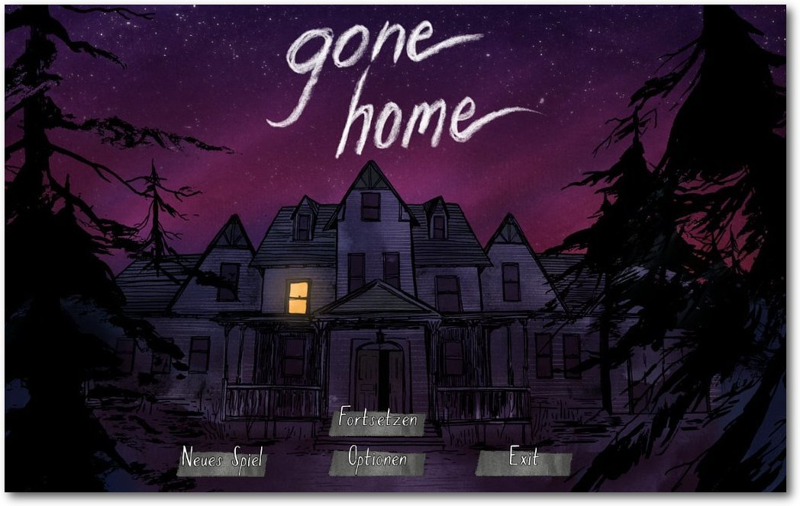

freiesMagazin Februar 2014
(ISSN 1867-7991)
Topthemen dieser Ausgabe
Fedora 20Gerade noch rechtzeitig vor Weihnachten ist mit vierwöchiger Verspätung Fedora 20 erschienen. Die Distribution enthält eine Vielzahl von Neuerungen, von denen die wichtigsten im Laufe des Artikels erwähnt und, soweit möglich, auch ausprobiert werden. Hauptsächlich wird auf die Desktopumgebungen GNOME und KDE eingegangen. (weiterlesen)
Gone Home
Was wäre, wenn man nach einer langen Reise nach Hause kommt und findet niemanden vor? Das Haus wirkt wie ausgestorben, und es gibt keine Spur, wo alle sind. So geht es Katie im Spiel „Gone Home“, in deren Rolle man herausfinden muss, was mit ihrer Familie geschehen ist. (weiterlesen)
Äquivalente Windows-Programme unter Linux – Teil 4: Bildbearbeitung (2)
Nachdem im letzten Teil Grafik- und Bildbearbeitungsprogramme unter Linux vorgestellt wurden, soll sich dieser Teil mit Screenshot-Programmen, Fotoverwaltungen und Diagrammeditoren unter Linux beschäftigen. Aufgrund der Vielzahl der Programme wird nur ein kleiner Teil vorgestellt. (weiterlesen)
Zum Index
Inhalt
Linux allgemeinFedora 20
Creative Commons 4.0 vorgestellt
Der Januar im Kernelrückblick
Anleitungen
Explizite Positionierung in LaTeX
Shell-Skripte – Kleine Helfer selbst gemacht
Sozi – Eine kurze Einführung in das Inkscape-Plug-in
Software
Gone Home
Äquivalente Windows-Programme unter Linux – Teil 4: Bildbearbeitung (2)
Community
Rezension: Android – kurz & gut
Rezension: Apps mit HTML5 und CSS3 für iPad, iPhone und Android
Rezension: Debian GNU/Linux – Das umfassende Handbuch
Magazin
Editorial
Leserbriefe
Veranstaltungen
Vorschau
Konventionen
Impressum
Zum Index
Editorial
Mehr Inhalt
freiesMagazin startete nicht so gut ins Jahr. Wer die Ausgabe des letzten Monats anschaute [1], sah, dass es gerade einmal drei Rezensionen, der Kernelrückblick und ein normaler Artikel ins Magazin geschafft haben. Und das lag nicht daran, dass wir mit Inhalt geizen wollten, sondern daran, dass nicht mehr Material vorlag. Nach unserem Aufruf im letzten Editorial hat sich das aber stark geändert. Die Resonanz war sehr hoch, wofür wir an dieser Stelle bereits allen Autoren (und zukünftigen Autoren) danken wollen. Dementsprechend ist diese Ausgabe von freiesMagazin wieder gewohnt prall gefüllt mit Inhalt. Selbst die Märzausgabe ist schon so gut wie fertig (was den Inhalt angeht). Es gab auch einige Leserbriefe zu dem Thema, die in der entsprechenden Rubrik nachgelesen werden können.Neuer Redakteur
Die starke Resonanz führte aber dazu, dass wir in der Redaktion die Arbeit nicht mehr schafften. Matthias Sitte und Dominik Wagenführ halten den Kontakt zu den Autoren und die Fülle an Artikeln konnten sie nicht mehr zeitnah bearbeiten. Aus dem Grund wurde die Redaktion mit Christian Schnell verstärkt. Er ist seit zwei Jahren bereits für freiesMagazin als Lektor tätig und hat sich der recht anspruchsvollen Aufgabe des Redakteur gestellt. Wir wünschen Christian auf alle Fälle viel Spaß mit der neuen Tätigkeit und hoffen, dass er die Entscheidung nicht bereut. ;)Neue Lizenz
Im November 2013 gab es eine neue Version der Creative-Commons-Lizenzen [2], die auch bei freiesMagazin seit mehreren Jahren benutzt werden. Im Zuge dessen haben wir uns entschieden, unsere Inhalte ebenfalls auf die Version 4.0 zu aktualisieren. Was sich mit der neuen Version der Creative-Commons-Lizenzen alles geändert hat und was das für freiesMagazin bedeutet, kann alles im Artikel „Creative Commons 4.0 vorgestellt“ nachgelesen werden. Wir wünschen Ihnen jetzt viel Spaß mit der neuen Ausgabe Ihre freiesMagazin-Redaktion Links[1] http://www.freiesmagazin.de/freiesMagazin-2014-01
[2] http://de.creativecommons.org/
Das Editorial kommentieren
Zum Index
Fedora 20
von Hans-Joachim Baader Gerade noch rechtzeitig vor Weihnachten ist mit vierwöchiger Verspätung Fedora 20 [1] erschienen. Die Distribution enthält eine Vielzahl von Neuerungen, von denen die wichtigsten im Laufe des Artikels erwähnt und, soweit möglich, auch ausprobiert werden. Hauptsächlich wird auf die Desktopumgebungen GNOME und KDE eingegangen. Redaktioneller Hinweis: Der Artikel „Fedora 20“ erschien erstmals bei Pro-Linux [2]. Wie immer sei angemerkt, dass es sich hier nicht um einen Test der Hardware-Kompatibilität handelt. Es ist bekannt, dass Linux mehr Hardware unterstützt als jedes andere Betriebssystem, und das überwiegend bereits im Standard-Lieferumfang. Ein Test spezifischer Hardware wäre zu viel Aufwand für wenig Nutzen. Falls man auf Probleme mit der Hardware stößt, stehen die Webseiten von Fedora zur Lösung bereit. Da eine Erprobung auf realer Hardware nicht das Ziel des Artikels ist, werden für den Artikel zwei identische virtuelle Maschinen, 64 Bit, unter KVM mit jeweils 1 GB RAM verwendet.Installation
Fedora kann von DVD, Live-CDs oder minimalen Bootmedien installiert werden. Natürlich kann man aus einem ISO-Image auch ein USB-Medium für die Installation erstellen. Die Live-CDs, die es in den Varianten GNOME, KDE, LXDE und Xfce sowie einigen weiteren Spins gibt, sind aufgrund ihres geringen Umfangs eher eine Notlösung für die Installation, denn es fehlen dann unter anderem LibreOffice und Übersetzungen. Zwar erfolgt die Installation binnen Minuten, da hierbei offenbar mehr oder weniger nur ein Abbild der CD auf die Platte geschrieben wird, aber für normale, vollständige Installationen sind die DVD oder das minimale Image, bei dem die eigentliche Distribution über das Netz installiert wird, vorzuziehen. Die Installation von Fedora erfordert mindestens 786 MB RAM, wie schon in Version 19 (siehe freiesMagazin 09/2013 [3]. Mit weniger als 768 MB ist die Installation noch mit Einschränkungen möglich. Für den Betrieb werden mehr als 1 GB empfohlen, was aber allenfalls für ziemlich alte Rechner zu einem Problem wird. Viel Neues gibt es gegenüber Fedora 19 nicht. Die Installation beginnt mit der Sprachauswahl, bei der interessanterweise Deutsch als Voreinstellung angeboten wird. Woher der Installer diese Vorauswahl bezieht, bleibt unklar – vielleicht über irgendeine BIOS-Einstellung.Sprachauswahl auf der Boot-DVD.
Danach gelangt man zur Übersichtsseite. Hier ermittelt das Installationsprogramm im Hintergrund bereits einige Dinge, es steht einem aber frei, diese abzuändern, und zwar weitgehend in beliebiger Reihenfolge. Alle Punkte, die vom Benutzer zwingend noch bearbeitet werden müssen, sind mit einem gelben „Warndreieck“ markiert. Die einzige zwingende Aktion ist die Auswahl des Installationsziels. Die erkannten Festplatten werden durch ein Icon angezeigt.
Übersichtsseite vor der Konfiguration.
Zu empfehlen ist noch die Auswahl der Tastaturbelegung. Hinter diesem Icon stehen alle Optionen zur Verfügung, einschließlich ungewöhnlicher Belegungen und Feineinstellungen. Auch die Software-Auswahl sollte man sich noch ansehen. Wenn man nicht GNOME, sondern eine andere Oberfläche installieren will, sowieso, aber es ist auch nötig, häufig benötigte Anwendungen wie LibreOffice explizit auszuwählen, sonst werden sie bei der Grundinstallation nicht mit installiert.
Softwareauswahl während der Installation.
Bei der Partitionierung sind die gewohnten Optionen wie die Verschlüsselung der gesamten Festplatte oder einzelner Partitionen, RAID und LVM vorhanden. Auch das Dateisystem Btrfs wird unterstützt, einschließlich seiner spezifischer Funktionen wie Subvolumes. Allerdings bezeichnet das Projekt Btrfs weiterhin als experimentell und warnt davor, wichtige Dateien auf das Dateisystem zu legen. Dennoch ist Btrfs eine der möglichen Optionen, wenn man die automatische Partitionierung wählt. Außer Btrfs sind auch „normale“ Partitionen und eine LVM-Installation möglich, letztere ist die Standardeinstellung. LVM- und Btrfs-Installation legen eine 500 MB große /boot-Partition mit dem Dateisystem ext4 an. Bei LVM wird der Rest als Root-Partition verwendet, mit btrfs wird eine separate /home-Partition als Subvolume angelegt, die sich aber aufgrund der besonderen Eigenschaften von Btrfs den Plattenplatz mit der Root-Partition teilt. Im Endeffekt ist diese Lösung noch flexibler als LVM. Während die Installation dann im Hintergrund läuft, muss man das Root-Passwort setzen und kann optional auch Benutzer anlegen. Nach der Installation ist keine weitere Konfiguration erforderlich, es startet direkt der Login-Manager, der die ausgewählte Desktopumgebung startet. Wer bereits Fedora 19 installiert hat, kann mit dem Programm fedup auf Version 20 aktualisieren. Üblicherweise bezieht man dabei die ca. 1400 zu aktualisierenden Pakete über das Netz, aber auch andere Quellen sind möglich. Das Update auf Fedora 20 wurde für diesen Artikel nicht getestet. Man muss aber darauf achten, dass dort, wo das Update das mehr als 300 MB große Bootimage ablegt, genug Platz vorhanden ist.
Neu in Fedora 20
Fedora 20 ist dem Red Hat-Entwickler Seth Vidal gewidmet, der nach einem Unfall im Juli 2013 verstorben ist. Zugleich markiert Fedora 20 jedoch auch das zehnjährige Jubiläum [4] von Fedora. Mit Fedora 20 wird ARM zu einer primären Architektur der Distribution, womit diese Architektur und die zugehörigen Installationsmedien zeitgleich mit den 32- und 64-Bit-Varianten von x86 zur Verfügung stehen. Erstmals gibt es auch Fedora-Images, die unmittelbar in öffentlichen Clouds wie den Amazon Web Services [5] oder in privaten Clouds, die mit OpenStack oder anderen Systemen verwaltet werden, eingesetzt werden können. Fedora unterstützt das Cachen von Blockgeräten mit bcache [6], einem anderen Verfahren als dm-cache, das im Device Mapper angesiedelt ist. bcache ist für die Charakteristiken von SSDs optimiert, so arbeitet es mit den Erase-Blöcken von SSDs und vermeidet es, lange sequentielle Zugriffe zu cachen, um den Cache für kurze Zugriffe auf weit auseinanderliegende Disk-Blöcke freizuhalten. In Systemd wurden zwei neue Unit-Typen eingeführt: Scope und Slice. Scopes werden von Systemd automatisch erzeugt und erfordern keine Konfiguration. Sie sind Gruppen, die aus Prozessen und all ihren Kindprozessen bestehen. Beispielsweise ist jede Benutzersitzung ein eigener Scope. Einem Scope können Ressourcen zugeordnet werden oder er kann in seiner Gesamtheit mit einem Kommando beendet werden. Slices hingegen sind Gruppierungen von Units, die Prozesse verwalten, beispielsweise Systemprozesse, virtuelle Maschinen und Benutzersitzungen. Einige Slices werden automatisch angelegt, sie können jedoch erweitert werden und man kann ihnen Ressourcen zuweisen. Systemd unterstützt jetzt auch TrueCrypt und das Filtern der Unit-Liste nach dem Status. Der zu Systemd gehörende Syslog-Ersatz Journald macht den Einsatz eines gesonderten Syslog-Daemons überflüssig. Er ermöglicht es, auch Logdateien aus der frühen Bootphase anzusehen, und bietet in jeder Hinsicht mehr Funktionalität als Syslog, nur eben mit anderen Kommandos. Ob seine Geschwindigkeit mit anderen hoch optimierten Syslog-Implementationen mithalten kann, muss hier offen bleiben, doch das ist ohnehin nur für eine kleine Minderheit von Anwendern von Belang, die auch weiterhin bei anderen Lösungen bleiben können. Auch die Virtualisierung wurde wiederum erweitert. So lassen sich Schnappschüsse einer virtuellen Maschine, die unter qemu oder libvirt läuft, mit einem neuen grafischen Werkzeug einfacher anfertigen. Virtuelle ARM-Rechner können nun leichter auf x86-Systemen ausgeführt werden. Fedora 20 enthält erstmals alle Pakete, die zum Betrieb der Apache Hadoop-Plattform 2.2 [7] benötigt werden. Für Java EE 7-Anwendungen steht jetzt WildFly 8, die von der Gemeinschaft entwickelte neue Version von JBoss, zur Verfügung. WildFly 8 soll besonders schnell laufen und durch optimierte Speicherverwaltung mit vergleichsweise wenig Speicher auskommen. Auch Ruby on Rails wurde aktualisiert und ist jetzt in Version 4.0 vorhanden. Perl 5.18, glibc 2.18, Boost 1.54.0 und vieles mehr komplettieren die Software-Auswahl für Entwickler. Die Unterverzeichnisse in /usr/share/doc haben nun keine Versionsnummern mehr, sondern nur noch den reinen Paketnamen. Verbesserungen waren auch in NetworkManager zu verzeichnen. Das Hinzufügen, Entfernen und Ändern von Netzwerken lässt sich nun vollständig über die Kommandozeile bewerkstelligen, sodass man hierbei auf eine grafische Oberfläche verzichten kann. Das Werkzeug ermöglicht es jetzt außerdem, Bonding und Bridges für Netzwerkschnittstellen anzulegen. Bluetooth wird von der neuen Version BlueZ 5 gehandhabt. In der Standardinstallation wird man kaum bemerken, dass einige Schriftarten um weitere Zeichen erweitert wurden, um mehr Sprachen darstellen zu können. Die Schriftart „Titillium“, die im Rahmen eines Studiengangs an der Akademie der schönen Künste in Urbino, Italien entwickelt wurde, kam neu hinzu. Auch die Unterstützung für 3D-Druck wurde verbessert, insbesondere durch das aktualisierte slic3r 0.9.10b und die neue Version von Cura. Außerdem kam das Programm simarrange hinzu. Bei den sonstigen Anwendungen wurde diesmal besonderes Augenmerk auf die Entwicklung elektronischer Schaltkreise (gtkwave, XCircuit) und Amateurfunker (fldigi, GNU Radio, qucs, Trusted QSL, xastir, xnec2c) gelegt. Standardmäßig installiert Fedora 20 kein Sendmail mehr, da auf Desktopsystemen typischerweise kein Mail-Server benötigt wird. Sowohl Sendmail als auch andere Mail-Server stehen weiterhin im Paket-Repository bereit. Der Kernel in Fedora 20 ist derzeit Version 3.12, die Installationsmedien enthalten noch 3.11. Als Desktopumgebungen stehen unter anderem KDE SC 4.11, GNOME 3.10, Xfce 4.10, Cinnamon 2.0, Mate 1.6, LXDE und Sugar 0.100 zur Verfügung. Erstmals ist auch Enlightenment E17 mit dabei. Neu ist auch X2Go, das einen Desktop eines anderen Rechners effizient darstellen kann und auf einem freien Fork der NoMachine NX-Bibliotheken beruht. Fedora 20 startet etwa genauso schnell wie sein Vorgänger. Wie immer ist SELinux eingebunden und aktiviert. Als normaler Benutzer merkt man überhaupt nichts davon, solange die Konfiguration korrekt ist. In Fedora 20 wie auch in der Vorversion trat kein sichtbares Problem im Zusammenhang mit SELinux auf. Für den Fall, dass ein Problem auftritt, sei es nach der Installation von zusätzlicher Software oder anderen Änderungen, steht ein Diagnosewerkzeug zur Verfügung. KDE benötigt in Fedora 20 direkt nach dem Start mit einem geöffneten Terminal-Fenster etwa 430 MB RAM, GNOME hat sich weiter auf 590 MB aufgebläht. Zu vermuten ist allerdings, dass dies zu einem großen Teil Cache-Speicher der GNOME-Shell für den JavaScript-Interpreter ist. Insofern muss das kein Nachteil sein, denn ungenutzter Speicher ist verschwendeter Speicher. Bei der Geschwindigkeit sollte sich kein nennenswerter Unterschied zwischen den Desktops feststellen lassen, sofern genug RAM vorhanden ist und die sonstigen Voraussetzungen erfüllt sind. Das Software-3D-Rendering, das benutzt wird, wenn kein 3D-fähiger Grafiktreiber zur Verfügung steht, weist eine akzeptable Geschwindigkeit auf, wenn die CPU schnell genug ist. Die Angaben zum Speicherverbrauch sind nur als Anhaltswerte zu sehen, die sich je nach Hardware und Messzeitpunkt erheblich unterscheiden können.GNOME
GNOME 3.10 ist der Standard-Desktop von Fedora 20, wenn man nicht ausdrücklich KDE, Xfce, LXDE oder etwas anderes auswählt. Beim ersten Start wird das Programm GNOME-Initial-Setup gestartet, das das Setzen einiger Optionen und die Eingabe von Online-Konten ermöglicht. Alle Schritte können auch übersprungen und später ausgeführt werden. Nach dem Setup startet jetzt auch die GNOME-Online-Hilfe automatisch.Übersichtsseite von GNOME.
Der Standard-Webbrowser unter GNOME ist Firefox 26.0. Einige Firefox-Plug-ins sind vorinstalliert, und zwar die GNOME-Shell-Integration und einige freie Multimedia-Codecs. Sonstige Erweiterungen sind nicht installiert. Die Office-Suite LibreOffice ist in Version 4.1.4.2 verfügbar, muss aber explizit ausgewählt werden, sonst wird keine Office-Suite installiert. Die Paketverwaltung erfolgt jetzt über GNOME-Software, das in einem späteren Abschnitt noch behandelt wird.
Firefox-Startseite.
Die meisten Neuerungen in GNOME 3.10 sind nicht sehr groß. Eine der wichtigsten Neuerungen ist der neu entworfene Bereich für den Systemstatus. In vorherigen Versionen bestand der Bereich aus einer Reihe von Menüs in der Ecke der oberen Leiste. Der neue Systemstatus-Bereich ersetzt diese durch ein einzelnes Menü. Das soll mehr Fokus auf die wichtigen Informationen bieten, daher wurden viele Menüpunkte entfernt und sind nur noch über andere Programme zugänglich. In dem neuen Menü verbergen sich ein paar Schieberegler und die Akku-Anzeige, die auch fehlen können, sowie Buttons für Systemeinstellungen, Bildschirmsperre und Ausschalten. Es gibt keine Möglichkeit, sich aus- und wieder einzuloggen (Beenden der GNOME-Shell), was man beispielsweise benötigt, wenn man Konfigurationsänderungen sehen will; entsprechende Optionen, wie sie z. B. bei KDE vorhanden sind, fehlen hier. Glücklicherweise gibt es eine Shell-Erweiterung, die das wieder herstellt. Ein gänzlich neues Benutzerelement in GNOME 3.10 sind die Kopfleisten. Diese verbinden Titelleisten und Werkzeugleisten in einem Element, was mehr Platz für Fensterinhalte lässt. Auch das ist letztlich eine Optimierung für kleine Bildschirme, die für normale Desktop-Benutzer eher Verwirrung stiftet, aber vielleicht erweist sich ihr Nutzen ja noch, wenn man sich daran gewöhnt hat. Die neue Anwendung „Karten“ nutzt die Daten von OpenStreetMap oder optional Satellitenbilder. Es ist möglich, nach Stadtnamen, Sehenswürdigkeiten und interessanten Orten zu suchen oder zu dem eigenen Standort zu gehen, oder jedenfalls zu dem, was das Programm für den eigenen Standort hält. Merkwürdig sind die anfänglichen Koordinaten (Manhattan). Das Programm bietet bei Weitem nicht so viel wie Marble und wird es wohl auch nie, besitzt aber eine viel einfachere Oberfläche, was ja auch von Vorteil sein kann. Es besitzt jedenfalls einiges Potential.
Einstellungen für GNOME.
Die GNOME-Shell kann dank Software-Rendering auf jeder Hardware laufen, auch wenn keine Hardware-3D-Beschleunigung zur Verfügung steht. Das Software-Rendering ist einigermaßen schnell und durchaus noch benutzbar, doch wird man es wohl kaum ertragen, wenn man keinen sehr schnellen Prozessor hat. Die Situation bessert sich mit einem Mehrkern-Prozessor, doch Videos verzögerungsfrei abzuspielen ist auf diese Weise schwer. Bei kleinen Videoformaten kann es aber noch gelingen. Die Bedienung von GNOME lässt in der Standardeinstellung so viel zu wünschen übrig, dass man sich sofort nach dem Classic-Modus sehnt. Nichts ist einstellbar, nichts ist wirklich logisch. Doch der Classic-Modus wird jetzt in Fedora nicht mehr standardmäßig installiert. Man kann aber das Paket gnome-classic-session nachinstallieren. Die Alternative ist die Installation von GNOME-Shell-Erweiterungen von der GNOME-Webseite. Aber nicht einmal dafür gibt es eine Option in GNOME selbst. Die Rettung ist das gnome-tweak-tool, auf Deutsch Optimierungswerkzeug genannt, das man aber erst einmal installieren muss. Mit diesem lassen sich – neben vielen anderen Dingen – Erweiterungen installieren. Um zu ersten Erweiterungen zu gelangen, enthält das Programm einen Link zur GNOME-Webseite. Die Installation von dort wird angestoßen, indem man auf der Seite der jeweiligen Erweiterung den Schalter von „off“ nach „on“ bewegt. Dann erscheint ein Dialog im Browser, der fragt, ob man die Erweiterung installieren will, und falls man bestätigt, wird sie installiert. Eine Rückmeldung des Systems fehlt leider und erst ein Neustart des Werkzeugs zeigt die neu installierten Erweiterungen.
Installation einer Shell-Erweiterung.
GNOME Classic besteht aus fünf Erweiterungen, die man durch die Eingabe des Suchbegriffs „Classic“ findet (es gibt sicher noch andere Erweiterungen mit ähnlichem Fokus, aber das sollte erst einmal genügen). Eine andere Erweiterung stellt den Logout-Button wieder her, diese kann man auch gleich installieren.
Installierte Shell-Erweiterungen im Optimierungswerkzeug.
Und siehe da: Nachdem die Erweiterungen ihre Arbeit aufnehmen, wird GNOME 3 benutzbar. Als dauernder GNOME-Benutzer würde man jetzt noch das Aussehen des Desktops optimieren, vielleicht weitere Erweiterungen installieren usw. Es zeigt sich nun, dass GNOME 3 sehr schnell, elegant und stabil ist. Es muss ja einen Grund haben, warum GNOME 3 neben KDE immer noch der bei Weitem beliebteste Desktop ist. Die mitgelieferten Anwendungen allerdings mögen einigen Benutzern gefallen, anderen nicht. Das spielt keine große Rolle, da man seine Anwendungen nicht nach der Desktop-Zugehörigkeit wählt. Eines scheint in GNOME 3 trotzdem zu fehlen, nämlich eine Sitzungsverwaltung. Es sollte möglich sein, beim Log-in in GNOME die zuletzt gestarteten Anwendungen wieder zu starten, möglichst mit den letzten Einstellungen. Stattdessen gibt es lediglich die Möglichkeit, bestimmte Programme beim Log-in automatisch zu starten – und selbst das nur über das Optimierungswerkzeug.
KDE
KDE ist in Version 4.11 enthalten, aber seit Fedora 18 nur noch ein „Spin“ mit einer KDE-Live-CD. Zur Installation muss man die Fedora-DVD verwenden und bei der Software-Auswahl KDE und die benötigten Anwendungen auswählen. Den Umfang der installierten KDE-Anwendungen bestimmt man damit selbst.Log-in-Bildschirm von KDE.
Die Plasma-Workspaces erhielten zahlreiche kleine Verbesserungen, die wie die verstärkte Verwendung von Qt Quick nicht sehr auffallen. Der Window-Manager KWin wurde optimiert, und die Monitor-Konfiguration in den Systemeinstellungen wurde durch das neue KScreen ersetzt. Dieses soll neue Bildschirme automatisch konfigurieren und sich manuelle Einstellungen merken. Es besitzt eine intuitive Oberfläche, in der es möglich ist, die Monitore mit Drag and Drop umordnen kann.
Plasma-Desktop.
Die hauptsächlichen Änderungen lagen zwar in den KDE-Kernanwendungen, doch handelt es sich dabei um kleinere Dinge, die nichts Grundlegendes ändern und nicht separat erwähnt werden können. Der Standard-Browser ist Konqueror, scheinbar ohne Änderungen an den Standardeinstellungen. Wie bei GNOME muss eine Office-Suite bei der Installation explizit ausgewählt werden, sonst wird keine Office-Suite installiert. KDE präsentiert sich weiterhin als angenehm zu benutzen und problemlos. Hier sind die traditionellen Bedienelemente unbeschädigt erhalten und es gibt Einstellungsmöglichkeiten bis zum kleinsten Detail, ohne dass man etwas nachinstallieren muss. Die Anwendungen bieten einen großen Funktionsumfang und sind konfigurier- und erweiterbar. Natürlich gilt auch hier, dass es andere freie Anwendungen geben kann, die den KDE-Anwendungen überlegen sind oder von einigen Benutzern bevorzugt werden.
Multimedia im Browser und auf dem Desktop
Wegen der Softwarepatente in den USA kann Fedora, ebenso wie die meisten anderen Distributionen, nur wenige Medienformate abspielen, da es viele benötigte Codecs nicht mitliefern kann. Die Lösung heißt wie immer RPM Fusion [8]. Diese Seite bietet zusätzliche Repositorys, die man durch einen Besuch der Webseite leicht hinzufügen kann. Dies gilt für alle Desktops gleichermaßen. Die Installation funktioniert prinzipiell mit Konqueror und Firefox. Bei Ersterem werden weiterhin öfter als nötig das Root-Passwort sowie mehrere Bestätigungen verlangt. Ferner verkündete am Ende eine Fehlermeldung scheinbar den Fehlschlag der Aktion. Doch trotz dieser Meldung war alles installiert. Besser machte es dieses Mal Firefox, wo es im Gegensatz zu Fedora 19 reibungslos klappte. Es hat sich bewährt, zuerst einmal alle benötigten Codec-Pakete zu installieren. Das erspart einem den Ärger, dass ein Player beim Versuch, eine MP3- oder Videodatei abzuspielen, den passenden Codec nicht findet. Zwar bieten die gängigen Player die Option an, über die Paketverwaltung nach passenden Plug-ins zu suchen, aber meist finden sie sie dann doch nicht oder machen andere Probleme. Zudem muss man die Anwendungen meist neu starten, nachdem ein Plug-in installiert wurde. Am schnellsten und einfachsten ist somit eine manuelle Installation der GStreamer-Plug-ins. Da sowohl die neue Version 1.2 von GStreamer als auch die Version 0.10 noch in Gebrauch sind, installiert man am besten die Codec-Sammlungen plugins-bad und plugins-ugly in allen Varianten für GStreamer 0.10 und GStreamer 1.2. Für GStreamer 0.10 benötigt man außerdem das FFmpeg-Plug-in, für GStreamer 1.2 dessen Fork libav. Standard-Player für Audio und Video ist unter GNOME der Player „Videos“, früher „Totem“ genannt. Unter KDE sind es Amarok und Dragonplayer. Während Amarok funktionierte, trat mit Dragonplayer das gleiche Verhalten auf wie in Fedora 19. Das Abspielen jedes Videos stoppte nach wenigen Sekunden und der Player funktionierte danach nicht mehr richtig oder stürzte ab. Es bleibt dabei, dass Dragonplayer zu nichts zu gebrauchen ist. Man installiert stattdessen eines der bewährten Programme wie (S)MPlayer, VLC oder Xine, die auch viel mehr Funktionalitäten aufweisen. Nachdem das Flash-Plug-in für Firefox eingestellt wurde und die Ersatz-Lösung noch nicht bereit ist, gestaltet sich die Situation beim Abspielen von Flash-Videos aus dem Web etwas schwieriger. Eine Alternative ist natürlich Google Chrome, der den Flash-Code von Adobe eingebaut hat. Wer den unfreien Browser nicht nutzen will, hat immer noch einige Möglichkeiten. So ist das Videoformat WebM [9] inzwischen recht verbreitet und funktioniert einwandfrei, beispielsweise bei der Tagesschau. Auch diverse andere Formate funktionieren. Auf YouTube und anderen Videoseiten wird man dagegen nicht jedes Video im WebM-Format finden. Es ist zu einem gewissem Grad verständlich, dass Google noch nicht alle Videos nach WebM konvertieren konnte. Es wäre aber kein Problem für Google, jedes Video, während es angefordert wird, zu konvertieren und das Resultat auch zu speichern. Keine Änderung gab es bei der freien Flash-Implementation Lightspark, die weiter in Version 0.7.2 vorliegt. Das bedeutet, dass man sie weiterhin vergessen kann. Es scheint noch eine langsame Weiterentwicklung zu geben, aber wohin das führt, muss man in einem halben Jahr nochmal sehen. Funktioniert das Abspielen im Browser trotz allem nicht, kann man immer noch das Video herunterladen und in einem externen Player öffnen.Paketverwaltung und Updates
Die Paketverwaltung bei GNOME wurde auf „GNOME-Software“ umgestellt. Warum auch nicht, war doch gpk-application so ausgereift, dass es bereits langweilig wurde. gpk-application steht immer noch zur Verfügung, wird aber standardmäßig nicht installiert. Wie alle GNOME-Programme bietet auch GNOME-Software nur minimale Funktionen. Es lassen sich Updates ausführen, Programme suchen und installieren sowie vorhandene Pakete deinstallieren. Es ähnelt dem Software Center von Ubuntu, allerdings in rudimentärer Form. Für eine ernsthafte Systemverwaltung mit yum und RPM (oder gpk-application) ist es kein Ersatz.
GNOME-Software.
Unter KDE kommt weiterhin Apper 0.8.1 zum Einsatz. Apper ist im Gegensatz zu GNOME-Software eine vollständige Paketverwaltung mit Paketquellen, Updates und Details bis auf die Paketebene. Sie kann die Kommandozeilenprogramme vollständig ersetzen. Sie ist so ausgereift, dass sie sich gegenüber Fedora 19 fast nicht geändert hat.
Apper.
Die Paketverwaltung baut unter GNOME und KDE grundsätzlich auf PackageKit auf. Sie funktioniert normalerweise reibungslos und die Updates, wenn sie auch zahlreich sind, sind dank Delta-RPMs oft erstaunlich klein und schnell installiert. Neu verfügbare Updates werden im Benachrichtigungsbereich angezeigt.
Verfügbare Updates in KDE.
DNF, ein möglicher und teilweise schnellerer Ersatz für Yum, wurde von Version 0.3 auf 0.4.10 aktualisiert. Mit dieser Version wird DNF parallel zu Yum installiert, und die Benutzer sind zu Tests aufgerufen [10]. Ob DNF Yum einmal ablösen wird, dürfte von der Akzeptanz durch die Benutzer abhängen. Die Funktionalität von Yum hat DNF nach Ansicht der Entwickler, abgesehen von einigen obsoleten Funktionen, inzwischen erreicht.
Fazit
Fedora 20 ist eine Distribution von hoher Qualität, bei der es kaum etwas zu beanstanden gibt. Der schwierigste Schritt, aber das ist wohl eine Binsenweisheit, ist immer die Installation bzw. die nachfolgende Anpassung an die eigenen Präferenzen. Auch mit Fehlern muss man manchmal kämpfen. Jedoch halten sich die Fehler in Fedora 20 in engen Grenzen, zudem werden viele anfängliche Fehler schnell behoben. Für die Anwender hat sich in Fedora 20 gegenüber Fedora 19 nicht viel von Bedeutung geändert. Am ehesten ist noch die erstmalige Aufnahme der Desktopumgebung Enlightenment zu nennen. Natürlich gab es wie immer eine große Zahl von neuen Paketen, aber auch Aktualisierungen. Fedora bringt reichliche und häufige Updates und ist damit immer aktuell. Doch das ist auch die größte Schwäche der Distribution: Die Basis ändert sich ständig und es gibt keine Version mit langfristigem Support. Alle sechs Monate ist das Update auf die neueste Version Pflicht. Das ist normalen Anwendern nicht zumutbar, nicht nur wegen des Aufwands, sondern auch weil es dabei durchaus zu unliebsamen Überraschungen kommen kann. Andere Distributionen, insbesondere Ubuntu oder Debian, bieten nicht nur wesentlich längeren Support, sondern ermöglichen auch das Update ohne Unterbrechung des Betriebs. Für mich bleibt es dabei, dass Fedora in erster Linie für erfahrene Benutzer geeignet ist, die immer die neueste Software wollen und auch kein Problem mit den Updates haben. Andere Benutzer, die Fedora mögen, sollten Red Hat Enterprise Linux, CentOS oder davon abgeleitete Distributionen nutzen. Diese Distributionen setzen auf ältere, aber stabile Software und lassen sich dort, wo man es benötigt, mit neueren Paketen, unter Umständen auch denen von Fedora, aktualisieren. Das dürfte für viele Anwender ein guter Kompromiss sein. Links[1] https://fedoraproject.org/wiki/F20_release_announcement
[2] http://www.pro-linux.de/artikel/2/1662/fedora-20.html
[3] http://www.freiesmagazin.de/freiesMagazin-2013-09
[4] http://www.redhat.com/about/news/press-archive/2013/12/fedora-20-now-available-celebrates-10-years-of-community-innovation
[5] https://aws.amazon.com/de/
[6] https://git.kernel.org/cgit/linux/kernel/git/torvalds/linux.git/plain/Documentation/bcache.txt
[7] http://hadoop.apache.org/
[8] http://rpmfusion.org/
[9] https://de.wikipedia.org/wiki/WebM
[10] http://www.pro-linux.de/news/1/20624/fedora-ruft-zum-test-von-dnf-auf.html
| Autoreninformation |
| Hans-Joachim Baader (Webseite) befasst sich seit 1993 mit Linux. 1994 schloss er erfolgreich sein Informatikstudium ab, wurde Softwareentwickler und ist einer der Betreiber von Pro-Linux.de. |
Diesen Artikel kommentieren
Zum Index
Creative Commons 4.0 vorgestellt
von Dominik Wagenführ Die Creative-Commons-Lizenzen [1] erfreuen sich bereits seit vielen Jahren großer Beliebtheit. Fast durchgängig wird die Lizenz für alle freien Inhalte wie Texte, Bilder, Musik und Videos genutzt. Auch bei freiesMagazin wird die Lizenz eingesetzt. Im November 2013 gab es eine neue Version der Creative-Commons-Lizenzen, deren Änderungen kurz vorgestellt werden sollen.Lizenzänderungen
Mehr als zwei Jahre hat es gedauert, ehe die Version 4.0 der Creative-Commons-Lizenzen fertig war [2]. Am 25. November 2013 gab es dann im deutschen CC-Portal den Hinweis auf die Aktualisierung [3]. Die Frage ist: War Version 3.0 nicht gut? Die Antwort lautet: Doch, aber … Version 4.0 versucht vor allem sprachlich einige Dinge zu vereinfachen oder klarzustellen, sodass es weniger Interpretationsspielraum gibt. Spezielle rechtliche Anpassungen vor allem für Länder der EU helfen, eine Lizenz länderübergreifend zu nutzen. Es gibt aber noch weitere Änderungen.Heilungsfrist
Verstieß bisher jemand gegen eine CC-Lizenz, verlor derjenige jegliches Recht, den Inhalt unter einer CC-Lizenz zu nutzen. Durch eine Änderung kann dieses Recht erhalten bleiben, wenn derjenige innerhalb von 30 Tagen den Fehler (z. B. eine fehlende Urheber- oder Lizenzangabe) korrigiert.ShareAlike auf das gesamte Werk
Durch den Zusatz „ShareAlike“ (kurz: SA; auf Deutsch „Weitergabe unter gleichen Bedingungen“) wollen viele Urheber sicherstellen, dass abgeleitete Werke wieder unter der gleichen oder einer ähnlichen Lizenz veröffentlicht werden. So ist es nicht möglich, die Rechte weiter auszubauen (z. B. Wegfall der Namensnennung) oder einzuschränken (z. B. nur eine Benutzung für nicht-kommerzielle Inhalte). Dies ging bisher auch, nur war der Absatz immer so formuliert, dass nur die veränderten oder ergänzten Teile eines Werkes unter der neu gewählten Lizenz stehen würden. Alles, was unverändert blieb, musste exakt die gleiche ShareAlike-Lizenz wie zuvor tragen. Da dies eine Masse an Lizenzangaben erfordern würde (und praktischerweise nie umgesetzt wurde), darf nun das Gesamtwerk mitsamt unveränderter Inhalte unter der neuen zu ShareAlike-ähnlichen Lizenz veröffentlicht werden.Datenbankrechte inklusive
Die Version 3.0 der lokalisierten CC-Lizenzen (also die für jedes Land angepassten) enthielten keine Regeln bzgl. Datenbankrechten. Da es in den meisten europäischen Ländern aber gesetzlich verankerte Datenbankrechte gibt, wurden diese in die lokalisierten CC-Lizenzen mit aufgenommen.Namensnennung
Die Namensnennung („Attribution“) erlaubt nun auch, dass ein Link mit den jeweiligen Informationen zum Urheber angegeben werden kann. Bisher war es notwendig, alle Informationen direkt im Werk mit anzugeben.Nicht kommerziell hat sich nicht geändert
Die Definition von „nicht kommerziell“ wurde nicht geändert und ist immer noch sehr frei interpretierbar. Zitat: „Kommerziell ist eine Nutzung dann, wenn sie in erster Linie auf kommerziell relevante Vorteile oder auf eine Vergütung abzielt.“ [4] Da nicht eindeutig geklärt ist, wie es mit Werbung auf Blogs aussieht, um diesen zu finanzieren, oder mit Flattr-Buttons, sollte man die NC-Lizenzen von Creative Commons wirklich nur gezielt und sparsam einsetzen.Keine automatische Aktualisierung
Wer seine Inhalte unter eine CC-Lizenz stellt, konnte bisher sicher sein, dass diese Lizenz immer gilt und nicht automatisch auf eine neue Version der Lizenz umgestellt wurde. Dies gilt auch weiterhin. Es gibt also keine automatische Update-Funktion. Eine Ausnahme hiervon sind die ShareAlike-Lizenzen, die eine Relizenzierung unter einer ähnlichen Lizenz ermöglichen – und dazu zählt auch eine neuere Version der Lizenz [5].Fazit
Insgesamt hat sich wenig geändert, es wurde aber vieles genauer beschrieben und korrigiert, was die Verwendung der Lizenz noch einfacher macht. Selbst ohne Jurastudium versteht man, was man mit CC-lizenzierten Inhalten machen darf und was nicht. Obige Änderungen sind aber nur ein kleiner Teil. Alle weiteren können bei Creative Commons nachgelesen werden [3]. Wer selbst eine Creative-Commons-Lizenz für seine Inhalt nutzen will und nicht genau weiß, was er nehmen soll, findet Hilfe auf der Webseite „Choose a License“ [6]. Die deutschsprachige Seite erklärt nun noch genauer, was die einzelnen Zusätze ShareAlike (SA), NoDerivative (ND) und NonCommercial (NC) bedeuten und welche Auswirkungen dies hat. Für freiesMagazin ändert sich auch etwas: Ab dieser Ausgabe 02/2014 stellen wir ebenfalls auf die neue Creative Commons Attribution-ShareAlike 4.0 International [7] um. Für die Leser und Leserinnen des Magazins ändert sich dadurch natürlich gar nichts. Für alle, die Inhalte aus dem Magazin an anderer Stelle verändert oder unverändert veröffentlichen wollen, gelten die gleichen Spielregeln wie die letzte vier Jahre: Bei einer Veröffentlichung von Artikeln muss der Name des Autors und die Lizenz mit angegeben werden. Bei einer Veröffentlichung des ganzen Magazins der jeweilige Chefredakteur (siehe Impressum) und ebenfalls die Lizenz. Links[1] http://de.creativecommons.org/
[2] http://creativecommons.org/weblog/entry/40768
[3] http://de.creativecommons.org/2013/11/25/version-4-0-ist-da/
[4] http://wiki.creativecommons.org/Frequently_Asked_Questions#Does_my_use_violate_the_NonCommercial_clause_of_the_licenses.3F
[5] http://wiki.creativecommons.org/Frequently_Asked_Questions#If_I_derive_or_adapt_material_offered_under_a_Creative_Commons_license.2C_which_CC_license.28s.29_can_I_use.3F
[6] http://creativecommons.org/choose/
[7] http://creativecommons.org/licenses/by-sa/4.0/deed.de
| Autoreninformation |
| Dominik Wagenführ (Webseite) nutzt Creative-Commons-Lizenzen für alle seine Inhalte und unterstützt das Creative-Commons-Projekt. |
Diesen Artikel kommentieren
Zum Index
Der Januar im Kernelrückblick
von Mathias Menzer Basis aller Distributionen ist der Linux-Kernel, der fortwährend weiterentwickelt wird. Welche Geräte in einem halben Jahr unterstützt werden und welche Funktionen neu hinzukommen, erfährt man, wenn man den aktuellen Entwickler-Kernel im Auge behält.Linux 3.13
Wie bereits der Dezember war auch der Januar vom Linux-Kernel 3.13 geprägt. Wie im Dezember bereits abzusehen, kündigte Torvalds bei Veröffentlichung von Linux 3.13-rc7 [1] an, noch eine Entwicklerversion einzuschieben. Dabei war zu diesem Zeitpunkt viel Ruhe eingekehrt und die enthaltenen Patches sahen teilweise eher nach „Rundschleifen“ denn nach echten Fehlerkorrekturen aus, wie zum Beispiel die Beseitigung mehrerer Compiler-Warnungen. Daher konnte auch die noch folgende achte Entwicklerversion [2] nicht mehr viel obenauf setzen. Mit am heftigsten schlugen hier noch Änderungen an den Broadcom-Netzwerktreibern ein, doch auch hier handelte es sich eher um großen Aufwand für kleine Korrekturen. Und so stellte Torvalds nach 78 Tagen Entwicklung – das fast dreiwöchiges Merge Window und den eigentlich nicht notwendigen -rc8 eingeschlossen – Linux 3.13 [3] zur Verfügung. Trotz über 13000 Commits gehört er mit einer durchschnittlichen Rate von knapp über 7 Commits pro Stunde zu einer der Kernel-Versionen, deren Entwicklung besonders ruhig verlaufen war. Der Zeitraum über Weihnachten und den Jahreswechsel hat hier das seinige dazu beigetragen, doch traten diesmal auch keine größeren Probleme auf. Doch auch wenn die Entwicklung selbst ohne besondere Ereignisse verlaufen war, weiß 3.13 einiges aufzubieten. Einige Funktionen haben eine ausreichende Reife erreicht, um nun standardmäßig aktiviert zu werden und neue interessante Funktionen kamen hinzu. Hier sei zuerst einmal „nftables“ erwähnt, das den Kernel-eigenen Paketfilter iptables [4] und die damit verbundenen ip6tables, arptables und ebtables beerben soll. Es stellt Firewall-Funktionalität für IPv4 [5] und IPv6 [6] sowie Filterfunktionen für ARP [7], das der Zuordnung von Hardware-Adressen zu IP-Adressen im lokalen Netzwerk dient, und Ethernet [8], dem Protokoll zur Übertragung von Daten durch elektrische Impulse zwischen zwei direkt miteinander verbundenen Geräten, zur Verfügung. Der Anwender profitiert von einer sehr stark vereinfachten Syntax, die zum großen Teil direkt lesbar und verständlich ist. nftables ist dabei noch kompatibel zu seinen Vorgängern und lässt sich auch mit deren Userspace-Programmen ansteuern. Doch zwischenzeitlich hat das netfilter-Team auch das zugehörige Kommandozeilenwerkzeug in einer ersten nutzbaren Version veröffentlicht [9], das notwendig ist, damit nftables seine Vorzüge auch tatsächlich ausspielen kann. „TCP Fast Open“ wurde als Client-Komponente bereits in Linux 3.6 (siehe „Der September und Oktober im Kernelrückblick“, freiesMagazin 11/2012 [10]) und Server-Teil (siehe „Der Dezember im Kernelrückblick“, freiesMagazin 01/2013 [11]) aufgenommen. Nachdem diese Methode, die den schnelleren Verbindungsaufbau zwischen einer Client-Anwendung und einem Server-Dienst zum Ziel hat, bereits von Anwendungen wie zum Beispiel dem Browser Chrome genutzt wird, ist sie von nun an in den Standardeinstellungen aktiviert. Die Entwickler – allesamt aus dem Hause Google – versprechen sich davon schnellere Reaktionszeiten auf Verbindungsanfragen für den Anwender und weniger Netzwerkpakete und damit Belastung der Infrastruktur auf Seiten der Dienste-Anbieter. Nicht ganz so lange dabei ist die Unterstützung für das neue Power Management von AMDs Radeon-Chipsätzen. Die in Linux 3.11 erstmals aufgenommene Unterstützung für das dynamische Energiemanagement (siehe „Der September im Kernelrückblick“, freiesMagazin 10/2013 [12]) war allerdings bislang als „Experimentell“ markiert und damit eher Liebhabern selbst kompilierter Kernel-Versionen vorbehalten. Ab sofort kann auch die breite Masse der Linux-Nutzer davon profitieren, sofern eine Radeon-Karte der Generation 6xx oder neuer eingesetzt wird. Daneben profitieren jetzt auch Nutzer von Radeon- Grafik von der in Linux 3.12 aufgenommenen Änderung (siehe „Der Oktober im Kernelrückblick“, freiesMagazin 11/2013 [13]), die das automatische Umschalten zwischen verschiedenen Grafik-Prozessoren erlaubt. Apropos Energieverwaltung: Ein neues Framework macht es nun möglich, Peripherie- Geräte eine Obergrenze für ihren Energiebedarf zu setzen. Somit kann der Energiehunger der an das System angeschlossenen Geräte begrenzt werden, sofern deren Treiber dies unterstützen. Insbesondere im Zusammenhang mit dem drahtlosen Bezahlen mittels Mobiltelefon wird „NFC“ [14] genannt. Der Linux-Kernel stellt nun eine Schnittstelle zur Verfügung, um mit sogenannten „Secure Elements“ zu arbeiten. Diese bestehen aus einem Speicherbereich und einer Umgebung zur Ausführung von Anwendungen innerhalb von kryptografisch gesicherten Chips wie beispielsweise Smart Cards. Mittels entsprechender Userspace-Programme könnten damit Bezahlvorgänge durchgeführt werden. Hier sind nur die sichtbarsten Neuerungen aufgeführt, eine vollständige Liste der Änderungen liefert die englischsprachige Seite Kernelnewbies.org [15]. Links[1] https://lkml.org/lkml/2014/1/4/120
[2] https://lkml.org/lkml/2014/1/12/48
[3] https://lkml.org/lkml/2014/1/19/148
[4] https://de.wikipedia.org/wiki/Iptables
[5] https://de.wikipedia.org/wiki/Ipv4
[6] https://de.wikipedia.org/wiki/Ipv6
[7] https://de.wikipedia.org/wiki/Address_Resolution_Protocol
[8] https://de.wikipedia.org/wiki/Ethernet
[9] http://www.pro-linux.de/-0h2150ce
[10] http://www.freiesmagazin.de/freiesMagazin-2012-11
[11] http://www.freiesmagazin.de/freiesMagazin-2013-01
[12] http://www.freiesmagazin.de/freiesMagazin-2013-10
[13] http://www.freiesmagazin.de/freiesMagazin-2013-11
[14] https://de.wikipedia.org/wiki/Near_Field_Communication
[15] http://kernelnewbies.org/Linux_3.13
| Autoreninformation |
| Mathias Menzer (Webseite) behält die Entwicklung des Linux-Kernels im Blick, um über kommende Funktionen von Linux auf dem laufenden zu bleiben und immer mit interessanten Abkürzungen und komplizierten Begriffen dienen zu können. |
Diesen Artikel kommentieren
Zum Index
Explizite Positionierung in LaTeX
von Dominik Wagenführ Mit LaTeX lassen sich zahlreiche Texte und Werke setzen (auch wenn für einige LaTeX ggf. nicht die erste Wahl ist). Für manche Aufgaben benötigt man eine explizite Positionierung von Objekten. Als Beispiel sei die Postererstellung genannt, wo man die einzelnen Textblöcke frei auf dem Blatt verteilen möchte. Der Artikel soll zwei Möglichkeiten für diese Positionierung aufzeigen.Einleitung
Für die explizite Positionierung beziehungsweise allgemein für das Setzen von Elementen in einem Gitter gibt es für LaTeX zahlreiche Pakete [1], von denen viele aber sehr speziell sind und aus diesem Grund nicht allgemein angewendet werden können. Es werden daher in diesem Artikel nur die Pakete erwähnt, die eine echte explizite Positionierung erlauben. Dies kann entweder in der Form „Setze mir ein beliebiges LaTeX-Element an eine bestimmte Position (X,Y) auf der Seite“ oder auch „Setze ein beliebiges LaTeX-Element relativ zu anderen auf die Seite“.textpos
Das LaTeX-Paket textpos [2] wurde von Norman Gray erstellt, existiert bereits seit 1999 und wird immer noch gepflegt. Die einfachste Anwendung sieht so aus:\documentclass{scrartcl}
\usepackage[absolute]{textpos}
\begin{document}
Das ist der normale Text der Seite,
der normalerweise nicht benutzt wird.
\begin{textblock*}{29mm}(45mm,80mm)
Hier steht ein kleines bisschen mehr
Text, als in die ganze Box passt.
\end{textblock*}
\end{document}
Listing: textpos-beispiel.tex
Durch die Option absolute des Paketes hat man die Möglichkeit, absolute
Positionen für die einzelnen Textblöcke anzugeben. Ohne die Option
beziehen sich alle Positionsangaben auf die aktuelle Position auf der Seite.
In dem Beispiel also auf den Absatz nach „… wird.“
Die textblock*-Umgebung stellt danach einen Textblock an der absoluten
Position 45 mm (horizontal) und 80 mm (vertikal) auf der Seite dar, wobei ab
der oberen linken Ecke gemessen wird. Der Block selbst hat dann eine Breite
von 29 mm. Die Höhe der Box wird durch den Inhalt bestimmt, der per
Standard, wie in LaTeX üblich, im Blocksatz gesetzt wird. Der Inhalt der Box ist
beliebig und kann auch Bilder oder andere LaTeX-Elemente enthalten.
Wenn man die Paket-Option showboxes mit angibt, wird die jeweilige
Box noch umrahmt. Wenn man das bei obigem Beispiel macht, sieht man auch,
dass es ein kleines Problem beim Umbrechen des Textes gibt, da dieser über
den Rand hinausgeht. Dies ist bei Blocksatz und solch kleinen Boxen normal,
da der maximale Abstand für Wörter sonst nicht eingehalten werden könnte.
Vergrößert man die Box oder nutzt \raggedright, \raggedleft
oder \centering innerhalb der Box, gibt es keine Probleme mit Umbruch
und Trennung des Textes.
Weitere Möglichkeiten des Paketes textpos sind, dass man ein Gridlayout
über \TPGrid angeben kann. Über die Nicht-Stern-Umgebung textblock ist
es dann möglich, anhand dieses Grids die Boxen zu positionieren. Zusätzlich
lässt sich der Ursprung in der linken oberen Ecke über \textblockorigin
verschieben, wenn man beispielsweise einen Rand mit beachten möchte. Alle
weiteren Funktionen kann man in der Dokumentation nachlesen.
\usepackage[absolute]{textpos}
\begin{document}
Das ist der normale Text der Seite,
der normalerweise nicht benutzt wird.
\begin{textblock*}{29mm}(45mm,80mm)
Hier steht ein kleines bisschen mehr
Text, als in die ganze Box passt.
\end{textblock*}
\end{document}
grid-system
grid-system [3] ist ein neues Paket von Marcus Bitzl. Bei der Erstellung des Paketes wurde sich dabei an den Layoutmöglichkeiten von Cascading Style Sheets (CSS [4]) orientiert. Das Paket ermöglicht die Darstellung von mehrspaltigen Textblöcken, die zueinander ausgerichtet sind. Ein Minimalbeispiel:\documentclass{scrartcl}
\usepackage{grid-system}
\begin{document}
\begin{row}{3}{2}
\noindent%
\begin{cell}{1}
Das ist ein kleiner Textblock mit
einer Spalte an sinnlosem Text.
\end{cell}
\begin{cell}{2}
Dieser Textblock nimmt gleich 2
Spalten fuer sich in Beschlag.
\end{cell}
\end{row}
\end{document}
Listing: grid-system-beispiel.tex
Das Paket stellt zwei neue Umgebungen row und cell zur Verfügung.
row erhält dabei zwei Argumente: Zum einen die Anzahl an Spalten, die der
gesamte Absatz haben soll, und zum anderen die Anzahl dargestellter
Zellen. Die Angabe der Zellen ist dabei notwendig, um vorab bestimmen zu
können, wie breit jede einzelne Zelle sein soll.
Die Umgebung cell stellt danach eine Zelle dar, die sich auch über
mehrere Spalten erstrecken kann, wie das erste Argument angibt. Die Summe
der Zellwerte (erster Wert von cell) muss dabei immer gleich der Anzahl
an definierten Spalten (erster Wert der row-Umgebung) sein.
Mit grid-system kann man demnach keine absolute Elemente positionieren,
aber zur Postergestaltung eignet sich das Paket gut, solange die platzierten
Elemente alle gleich hoch sind. Ansonsten wäre textpos vorzuziehen.
Eine Besonderheit ist aktuell (Dezember 2013) noch, dass entweder
\parindent den Wert 0 haben muss oder vor die erste Zelle ein
\noindent geschrieben werden muss. Andernfalls ragen die definierten
Spalten um den in \parindent definierten Werte in den rechten Rand
hinein. Eine korrigierte Version steht seit Januar 2014 zur Verfügung.
Links\usepackage{grid-system}
\begin{document}
\begin{row}{3}{2}
\noindent%
\begin{cell}{1}
Das ist ein kleiner Textblock mit
einer Spalte an sinnlosem Text.
\end{cell}
\begin{cell}{2}
Dieser Textblock nimmt gleich 2
Spalten fuer sich in Beschlag.
\end{cell}
\end{row}
\end{document}
[1] http://dante.ctan.org/tex-archive/help/Catalogue/bytopic.html#gridlayout
[2] http://dante.ctan.org/tex-archive/help/Catalogue/entries/textpos.html
[3] http://dante.ctan.org/tex-archive/help/Catalogue/entries/grid-system.html
[4] https://de.wikipedia.org/wiki/Cascading_Style_Sheets
| Autoreninformation |
| Dominik Wagenführ (Webseite) nutzt textpos für die Ausrichtung der grafischen Kopf- und Fußzeile in freiesMagazin. |
Diesen Artikel kommentieren
Zum Index
Shell-Skripte – Kleine Helfer selbst gemacht
von Christian Imhorst Mit Shell-Skripten sind kleine Helfer schnell selbst geschrieben. Sie haben den Vorteil, dass man sich keine langen Befehlszeilen auswendig merken muss. Es reicht dann, einfach das eigene Shell-Skript aufzurufen.Spielend lernen
Eine erste Einführung in die Shell findet man im Artikel „Nur keine Angst: Effektives Arbeiten mit der Shell“ in freiesMagazin 04/2013 [1]. Für die Shell gibt es noch viele andere Bezeichnungen, wie beispielsweise Kommandozeile, Konsole oder Terminal. Wer die Einführung schon gelesen hat und sein Wissen über Shell-Befehle noch weiter vertiefen will, sollte sich das Spiel Terminus [2] einmal ansehen. Es ist ein textbasiertes Computer-Rollenspiel, das einem dabei helfen soll, die Befehle der Kommandozeile zu lernen und zu verinnerlichen. In dem Spiel bewegt man sich mit Hilfe von Shell-Befehlen weiter. Mit pwd sieht man, wo man sich gerade befindet, mit ls schaut man sich um und mit less kann man Gegenstände betrachten. Terminus erinnert ein bisschen an das Spiel NetHack [3], ein Computer-Rollenspiel mit ASCII-Grafik, bei dem man durch die Spielsteuerung schon erste Befehle für den Editor Vi/Vim gelernt hat.Kurz-URLs expandieren
Als Beispiel für den kleinen Helfer wird ein Skript erstellt, das Kurz-URLs expandiert. Kurz-URLs [4] verkürzen die meist für Suchmaschinen optimierten Links von Internetseiten auf wenige Zeichen. Der Dienst tinyurl.com [5] war einer der ersten, die kurze URLs als simple HTTP-Weiterleitung auf die lange URL anbot. Mittlerweile gibt es schon viele mehr. Mit Twitter und seiner Beschränkung auf 140 Zeichen pro Nachricht traten diese Dienste ihren Siegeszug an, da eine URL, die man gerne teilen möchte, ansonsten schnell mal die Zeichengrenze eines Tweets sprengen kann. Solche Kurz-URLs haben allerdings auch einen Haken: Man sieht ihnen am Domain-Namen nicht an, wo sie hinführen. Wenn man Pech hat, führt einen der Link geradewegs auf eine präparierte Seite mit Malware.Informationen mit Wget holen
Zur Überprüfung der Kurz-URLs kann man Wget [6] benutzen, was meist schon mit der Linux-Distribution der eigenen Wahl installiert ist oder schnell installiert werden kann. Mit Wget kann man über das Terminal Dateien aus dem Internet herunterladen, wobei es auch noch ein hervorragender Downloadmanager ist. Möchte man zum Beispiel alle Bild-Dateien mit der Endung PNG von einer Homepage herunterladen, reicht der Befehl:$ wget -r -A png http://www.example.de/
Bricht man den Download ab, kann man später die Option -c an den Befehl
anhängen, um den Download dort fortzusetzen, wo er ausgesetzt hat. Darüber
hinaus kann man mit Wget auch den Status des Webservers abfragen, der die
Seite ausliefert, zu der die Kurz-URL führt:
$ wget --server-response -qO- 0cn.de/y6ck
Die Option --server-response holt nur eine Antwort vom Webserver, ohne
ihn dabei zu besuchen. Die Option -q sorgt dafür, dass unnötige
Informationen nicht auf der Kommandozeile ausgegeben werden. Mit O- wird
die Startseite, z. B. index.html, direkt auf die Standardausgabe des
Terminals (STDOUT) geschrieben. Andernfalls würde Wget sie herunterladen.
Zum Schluss folgt noch die Kurz-URL, die in diesem Fall mit dem Dienst
0cn.de erstellt wurde.
Da die Ausgabe des Befehls durch den Quelltext der
Startseite, die ins Terminal geschrieben wird, sehr lang ist, wird er noch
um die Option --max-redirect=0 erweitert. Damit dringt Wget auf der
Webseite nicht tiefer als bis zur Auflösung der URL vor.
$ wget --max-redirect=0 --server-response -qO- 0cn.de/y6ck
HTTP/1.1 302 Moved Temporarily
Date: Thu, 09 Jan 2014 21:03:30 GMT
Server: Apache/2.2.3 (CentOS)
Location: http://www.freiesmagazin.de/freiesMagazin-2014-01
Content-Length: 0
Connection: close
Content-Type: text/html; charset=utf-8
HTTP/1.1 302 Moved Temporarily
Date: Thu, 09 Jan 2014 21:03:30 GMT
Server: Apache/2.2.3 (CentOS)
Location: http://www.freiesmagazin.de/freiesMagazin-2014-01
Content-Length: 0
Connection: close
Content-Type: text/html; charset=utf-8
Filtern mit Grep
Da letztendlich nur das Ziel interessiert, zu dem der gekürzte Link führt, benötigt man die Zeile mit der Location. Das Ausschneiden der Zeile erledigt Grep [7] (siehe auch „grep – Eine kleine Einführung“, freiesMagazin 10/2009 [8]). Allerdings wird es jetzt ein bisschen verzwickt, da Wget noch eine kleine Besonderheit hat. Alle Befehle und Programme, die in der Shell gestartet werden, bekommen drei Kanäle zugewiesen. Zum einen den Standardeingabekanal STDIN, der auch die Nummer 0 hat und normalerweise die Eingaben von der Tastatur liest. Zum anderen den Standardausgabekanal STDOUT mit der Nummer 1, der die Ausgabe des Befehls auf den Bildschirm schreibt. Zum Schluss den Standardfehlerkanal STDERR mit der Nummer 2, der auch seine Ausgaben auf den Bildschirm bringt. Die Besonderheit von Wget ist nun, dass es den HTTP-Header an die Standardfehlerausgabe (STDERR) übergibt. Der Datenstrom von Wget muss vorher mit 2>&1 in die Standardausgabe (STDOUT) umgeleitet werden, wovon Grep das Ergebnis dann übernehmen kann. Ansonsten würde Grep keine Daten erhalten. Wie beschrieben, ist STDERR in der Shell auch der Kanal 2 und STDOUT der Kanal 1, sodass 2>&1 nur „Leite die Ausgabe von Kanal 2 nach Kanal 1 um“ bedeutet.$ wget --max-redirect=0 --server-response -qO- 0cn.de/y6ck 2>&1 | grep Location
Location: http://www.freiesmagazin.de/freiesMagazin-2014-01
Location: http://www.freiesmagazin.de/freiesMagazin-2014-01
Ausschneiden mit Awk
Die Ausgabe sieht schon gut aus, allerdings stört noch das Location: vorne. Zur Bearbeitung strukturierter Texte und Strings in der Shell eignet sich awk [9] sehr gut (siehe auch „Keine Angst vor awk – ein Schnelleinstieg“, freiesMagazin 06/2009 [10]). In diesem Fall besteht die Struktur aus einer zweispaltigen Ausgabe. Die erste Spalte ist Location:, die zweite die URL. Mit einer Weiterleitung zum Befehl awk '{print $2}', wird nur die zweite Spalte angezeigt:$ wget --max-redirect=0 --server-response -qO- 0cn.de/y6ck 2>&1 | grep Location | awk '{print $2}'
http://www.freiesmagazin.de/freiesMagazin-2014-01
http://www.freiesmagazin.de/freiesMagazin-2014-01
Auslagerung in ein Skript
Mittlerweile ist schon eine ganz schön lange Befehlszeile zusammengekommen. Würde man sie immer wieder abtippen, um das Ziel einer Kurz-URL zu betrachten, hat man gut zu tun. Zur Vereinfachung wandert der komplette Befehl in ein Skript, das man mit einem Editor erstellen kann. Auf den meisten Systemen ist heute der Vim (Vi IMproved [11]) installiert, eine Weiterentwicklung des Vi. Der Befehl vi funktioniert trotzdem, da er mit Vim verknüpft ist, was einem ein ls -l /usr/bin/vi zeigt. Wenn Vim vollständig installiert ist, sollte man unbedingt einmal den Befehl vimtutor in der Shell ausführen. Vimtutor hilft dabei, den Editor soweit zu beherrschen, dass man ihn als Allzweck-Editor nutzen kann. Da nicht jeder Vim mögen muss, kann man auch einen anderen Editor verwenden, z. B. nano im Terminal. Sowohl zu Vim als auch nano gibt es Artikel in freiesMagazin 08/2008 [12]. Wer einen grafischen Editor bevorzugt, kann Gedit, KWrite, Geany oder einen der Hundert anderen benutzen. Wenn man einen grafischen Editor aus dem Terminal heraus starten will, sollte man noch ein & ans Ende der Befehlszeile setzen, damit sie nicht blockiert wird. Wobei man GUI-Programme eher vom Desktop aus aufrufen sollte. Ist der Editor der eigenen Wahl gestartet, tippt man folgende Zeilen ein bzw. kopiert sie in das Textfenster:#! /bin/sh
wget --max-redirect=0 --server-response -qO- "$@" 2>&1 | grep Location | awk '{print $2}'
exit 0
Listing: linkextender.sh
Anschließend speichert man das Skript und wechselt wieder in die
Kommandozeile, in der man das Skript noch ausführbar macht:
wget --max-redirect=0 --server-response -qO- "$@" 2>&1 | grep Location | awk '{print $2}'
exit 0
$ chmod +x linkextender.sh
Das Skript beginnt in der ersten Zeile mit der Zeichenkombination #!, dem
Shebang, auch Magic Line genannt (siehe „Shebang - All der Kram“,
freiesMagazin 11/2009 [13]).
Sie weist das Betriebssystem an, die Datei mit der Standard-Shell
auszuführen. Die Zeile funktioniert übrigens mit und ohne Leerzeichen nach
dem Ausrufezeichen.
Möchte man sich nicht darauf verlassen, welches die Standard-Shell auf einem
System ist, kann man auch die Shell direkt eintragen. Das ist zum Beispiel
sinnvoll, wenn das Skript besondere Befehle verwendet, die nicht jede Shell
kennt. Dann gibt man zum Beispiel #! /bin/bash ein, wenn man die Bash
verwenden will.
In der Zeile mit Wget steht nun anstelle der Kurz-URL die
Zeichenfolge $@. Sie sorgt dafür, dass alle Parameter dem Skript als Argumente übergeben
werden, wobei die Anführungszeichen sicherstellen sollen, dass jeder Parameter für
sich ein separater String bleibt. Mit exit 0 liefert das Skript den
Exitstatus 0 zurück und beendet sich normal.
Das Skript ruft man nun zusammen mit einem Argument in der Kommandozeile auf:
$ ./linkextender.sh 0cn.de/y6ck
Alternativ kann man es auch mit einer vorangestellten Shell aufrufen:
$ sh linkextender.sh 0cn.de/y6ck
Fazit
Auf jedem Linux- oder Unix-basiertem Betriebssystem gibt es eine Menge Shell-Skripte, die wichtige Aufgaben übernehmen. Einige sind ähnlich simpel wie das Skript weiter oben, andere sind wesentlich komplexer. Wenn man diese Skripte versteht, ist man nicht mehr hilflos der Technik ausgeliefert, sondern kann selber Lösungen entwickeln. Dabei kann man vorhandene Skripte auf seinem System anpassen oder, wenn die das Problem nicht beheben, ein eigenes Skript schreiben. Dieses Wissen kann eine große Hilfe sein, um Probleme zu lösen. Links[1] http://www.freiesmagazin.de/freiesMagazin-2013-04
[2] http://web.mit.edu/mprat/Public/web/Terminus/Web/main.html
[3] http://nethack.org/
[4] https://de.wikipedia.org/wiki/Kurz-URL-Dienst
[5] http://tinyurl.com/
[6] http://www.gnu.org/software/wget/
[7] http://www.gnu.org/software/grep/
[8] http://www.freiesmagazin.de/freiesMagazin-2009-10
[9] http://www.gnu.org/software/gawk/
[10] http://www.freiesmagazin.de/freiesMagazin-2009-06
[11] http://www.vim.org/
[12] http://www.freiesmagazin.de/freiesMagazin-2008-08
[13] http://www.freiesmagazin.de/freiesMagazin-2009-11
| Autoreninformation |
| Christian Imhorst (Webseite) betreut beruflich Windows-Systeme, weshalb seine täglichen Kommandozeilen eher cmd.exe sowie die PowerShell sind. Nach Feierabend ist er dann aber sein privater Linux-Admin und die Konsole ist dann auch immer mit dabei. |
Diesen Artikel kommentieren
Zum Index
Sozi – Eine kurze Einführung in das Inkscape-Plug-in
von Jens Dörpinghaus Wer heute seine Zuhörer nicht langweilen möchte, greift zu innovativen Präsentationskonzepten. Diese vermisst man unter Linux natürlich nicht, so gibt es beispielsweise das Plug-in Sozi [1] für Inkscape [2]. Prezi [3] hat es vorgemacht und für einen richtigen Rummel gesorgt: Die Präsentation als interaktiven Rundflug auf einem endlosen Präsentationspapier. Die vermeintlich „langweiligen“ Präsentationen, die herkömmliche Programme wie LibreOffice Impress [4] produzieren, werden als altmodisch, langweilig und wegen ihres linearen Konzeptes nicht dem menschlichen Denken angepasst bezeichnet. Sicher kann man von diesem Konzept halten, was man mag. Ein Blick auf das Inkscape-Plug-in Sozi lohnt sich trotzdem, denn man kann die Einsatzmöglichkeiten keineswegs nur auf Präsentationen einschränken. Prezi selbst ist mit seinem Geschäftsmodell nicht einmal als kostenlose Alternative wirklich nutzbar, denn alle damit erstellten Präsentationen sind für jeden zugänglich. Prezi ist des Weiteren für Linux offiziell nicht verfügbar und baut auf Flash auf, das nicht jeder nutzen mag. Das Konzept von Sozi ist es, JavaScript [5] zu den SVG-Dateien [6] hinzuzufügen (bzgl. SVG siehe auch „Bildformat SVG verstehen“, freiesMagazin 02/2010 [7]). Diese Dateien können von nahezu jedem Browser dargestellt werden. Es kann von der offiziellen Homepage [8] bezogen werden und ist auch in der Paketverwaltung vieler Distributionen über das Paket sozi enthalten.Ein Beispiel
Als erstes Beispiel kann man eine Art Ideenbaum verwirklichen, also einen symbolischen Baum, an dem Ideen als Früchte hängen. Die Früchte – etwa Äpfel – werden nur mit Zahlen gefüllt, die der Reihe nach „angeflogen“ werden sollen. Jedes Objekt kann Sozi als Anknüpfungspunkt übergeben werden. Dabei erfolgt die Darstellung in der richtigen Größe und im richtigen Winkel.Eine einfache Grafik, die mit Inkscape erstellt wurde.
Es bietet sich an, der Grafik eine neue Ebene zu spendieren, auf der diese Bereiche gekennzeichnet werden. Dies ist kein Muss, hat aber den Vorteil, dass mit dem Ausblenden dieser Ebene auch alle Sozi-spezifischen Objekte ausgeblendet werden.
Eine neue Ebene für die Elemente, die von Sozi benutzt werden.
Hat man die entsprechenden Objekte, etwa Kreise oder Rechtecke, im entsprechenden Winkel auf dieser Ebene angelegt, können diese markiert werden und über den Menüpunkt „Erweiterungen -> Sozi“ in die Präsentation eingebunden werden. Ein Fenster mit der Nachricht „Sozi arbeitet, bitte warten …“ erscheint immer und sollte nicht geschlossen werden.
Alle Bildausschnitte, die in der fertigen Präsentation angezeigt werden sollen, sind hier erkennbar.
Im linken Bereich des neuen Fensters erscheint nun die Reihenfolge der Präsentation, im rechten können die im folgenden erklärten Einstellungen getätigt werden. Es lohnt sich, den Ablaufpunkten sprechende Namen zu geben, da diese so besser wieder gefunden werden können – diese Namen erscheinen auch in der Präsentation.
Das Einstellungsfenster von Sozi.
Die Option „Hide“ kann aktiviert werden, wenn das entsprechende Objekt in der fertigen Präsentation nicht zu sehen sein soll. Dies ist in diesem Fall sinnvoll, denn dadurch erscheinen die Rahmen nicht in der Präsentation. „Clip“ kann aktiviert werden, wenn der Darstellungsbereich nur auf dieses Objekt beschränkt sein soll. Der automatische Vorlauf nach der in „Timeout“ eingegebenen Zeit kann mit „Timeout enable“ erfolgen. „Duration“ gibt die Dauer des Animationsprozesses an. Als Profil bietet sich primär das Profil „linear“ an.
Eine fertige Präsentation.
Dieser Vorgang kann für alle Bereiche wiederholt werden, bis eine vollständige Liste aller Elemente der Präsentation entstanden ist. Nun kann die Datei abgespeichert und in einem Browser wiedergegeben werden. Die Navigation erfolgt dann mithilfe der Pfeiltasten oder der Maus. Eine Übersicht über alle Ablaufpunkte kann mit der mittleren Maustaste angezeigt werden. Es kann aber auch frei mit der Maus navigiert und gezoomt werden.
Die Präsentation im Browser.
Weitere Möglichkeiten
Über den Menüpunkt „Erweiterungen -> Sozi Extra“ können auch Audio- und Videoelemente zur Präsentation hinzugefügt werden. Diese können auch automatisch an bestimmte Ablaufelemente gekoppelt sein. Die Anwendungsmöglichkeiten für Sozi sind vielfältig. So kann auch ein multimedialer Teil einer Webseite in kurzer Zeit erstellt werden. Ein weiteres Anwendungsbeispiel ist etwa ein Bilderbuch. Die eigentliche Datei besteht aus Bildern und Text. Es wird immer von einem Bild zum Text und dann zu bestimmten Bildausschnitten navigiert. Dadurch, dass der Benutzer selbst in der Präsentation navigieren kann, ist diese Auswahl nicht einschränkend. Es bietet sich an, hier den Timeout zu nutzen und die Textansichten durch Audiodateien zu ergänzen.Ein Bilderbuch als Präsentation, die einzelnen Ausschnitte sind als Kästen erkennbar.
SVG-Dateien auf dem Webserver
Um SVG-Dateien auf einem Webserver anzuzeigen, muss bei einem Apache-Server die .htaccess-Datei um folgende Zeilen ergänzt werden [9]:AddType image/svg+xml svg
AddType image/svg+xml svgz
AddType image/svg+xml svgz
Fazit
Eigentlich erscheint die Nutzung von Sozi sehr einfach. Leider sind die Möglichkeiten auch beschränkt – so ist eine Nutzerinteraktion nicht vorgesehen – bietet aber alle wesentlichen Bestandteile einer Präsentation an. Was schwerer ins Gewicht fällt ist, dass der Anwender mit Inkscape vertraut sein muss. Sonst bieten sich dadurch fast unendlich viele Gestaltungsmöglichkeiten. Dieser Nachteil ist aber, vergleicht man Sozi etwa mit impress.js [10] und reveal.js [11], auch ein Vorteil, da man sich nicht mit JavaScript und anderen Webtechnologien auskennen muss. Hier muss jeder persönlich entscheiden, ob er die bei weitem vielfältigeren Möglichkeiten benötigt und die erforderlichen Kenntnisse mitbringt oder ob Sozi im Verbund mit Inkscape nicht ausreicht. Weiter sei auch auf das Plug-in JessyInk [12] hingewiesen, da dieses die Erstellung von linearen Präsentationen als SVG-Datei ermöglicht. Dies ist schließlich ebenfalls der unschlagbare Vorteil von Sozi – alle Präsentationen können mit Hilfe eines SVG-fähigen Standardbrowsers überall geöffnet und abgespielt werden. Links[1] http://sozi.baierouge.fr/
[2] http://inkscape.org/de/
[3] http://prezi.com/
[4] http://de.libreoffice.org/product/impress/
[5] https://de.wikipedia.org/wiki/JavaScript
[6] https://de.wikipedia.org/wiki/SVG
[7] http://www.freiesmagazin.de/freiesMagazin-2010-12
[8] http://sozi.baierouge.fr/pages/20-install.html
[9] http://www.w3.org/services/svg-server/
[10] http://bartaz.github.io/impress.js/
[11] http://lab.hakim.se/reveal-js/
[12] http://code.google.com/p/jessyink/
| Autoreninformation |
| Jens Dörpinghaus ist gerne kreativ unterwegs und ist immer wieder erstaunt, was es an freier Software in diesem Bereich gibt. |
Diesen Artikel kommentieren
Zum Index
Gone Home
von Dominik Wagenführ Was wäre, wenn man nach einer langen Reise nach Hause kommt und findet niemanden vor? Das Haus wirkt wie ausgestorben, und es gibt keine Spur, wo alle sind. So geht es im Spiel „Gone Home“ [1] Katie, die herausfinden muss, was mit ihrer Familie geschehen ist.Hintergrundgeschichte
Die 21-jährige Kaitlin Greenbriar, kurz Katie genannt, verbrachte ein Jahr in Europa, um Land und Leute kennen zu lernen. Als sie im Juni 1995 kurz nach Mitternacht nach Hause kommt, ist das Haus leer. Ihre Eltern und ihre drei Jahre jüngere Schwester Sam sind verschwunden und ein Zettel an der Haustür deutet darauf hin, dass nicht alles in Ordnung ist. Während Katies einjähriger Abwesenheit ist ihre Familie in ein neues Haus umgezogen, das Katies Vater von einem verstorbenen Onkel erhalten hatte. Da Katies Großonkel als verrückt galt, wird das Haus auch als Psycho-Haus tituliert, was kein gutes Vorzeichen sein kann. Als Katie durch das Haus streift, sind zahlreiche Lampen eingeschaltet, Fernseher und Radio laufen und überall liegen leere Pizzaschachteln herum. Es sieht nach einem sehr plötzlichen Verschwinden aus. „Gone Home“-Titelbildschirm.
Spielziel
Als Katie läuft man durch das vierstöckige Haus und durchsucht jeden Raum nach Hinweisen auf das Verschwinden der Familie. Überall verstreut liegen Notizzettel, Briefe und Rechnungen, die nach und nach dem Jahr, in dem Katie nicht da war, ein Bild geben. Einige Fundstücke lösen einen Tagebucheintrag aus, in dem Katies Schwester Sam ihr erzählt, was gerade in ihrem Leben vorgefallen ist. So erhält man als Spieler einen sehr guten Einblick in das Leben von Sam und ihrer Familie. „Gone Home“ lässt sich am ehesten in die Ecke der Adventure-Spiele [2] schieben, wobei es dort auch nicht richtig aufgehoben ist, denn ein Großteil macht das Genre „Visual Novels“ [3] aus. Ähnlich wie im Spiel „Dear Esther“ (siehe freiesMagazin 07/2013 [4]) geht es weniger darum, Rätsel zu lösen und Gegenstände von A nach B zu bringen. Insgesamt gibt es ohnehin nur wenige Rätsel, vieles ist offensichtlich: Finde Schlüssel hier, öffne Tür da. Aber darum geht es in „Gone Home“ auch gar nicht. Das Spiel soll eine Geschichte erzählen, in die man sich als Spieler hineinversetzen kann.Katies Familie mit ihrer Schwester Sam und Eltern.
Technisches
Für die Umsetzung von „Gone Home“ wurde die Unity-Engine [5] genutzt, sodass das Spiel auf allen gängigen Plattformen läuft. Für den Start auf einem deutschsprachigen Linux ist es aber notwendig, dass man das Spiel über$ LC_ALL=C ./GoneHome.x86_64
startet (für die 32-Bit-Version ohne _64). Dies setzt die
Spracheinstellung für die Ausführung des Spiels auf Englisch, da das Spiel
Probleme mit anderen Einstellungen hat. Vergisst man das Setzen, fällt man
direkt nach dem Start des Spiels durch den Fußboden und sieht nur ein
schwarzes Nichts mit einem weißen
Punkt [6].
Grafisch ist „Gone Home“ sicherlich nicht umwerfend. Das Haus ist teilweise
sehr generisch eingerichtet, und auch wenn versucht wurde, durch zahlreiche
Bücher, Zeitschriften, Notizen etc. dem Spiel etwas Eigenes zu geben, gibt
es immer wiederkehrende Gegenstände wie Klopapier, Getränkedosen oder
Aktenorder, die sehr leblos wirken. Auch wenn es zu viel verlangt ist, haben
Bücher
eben keine Seiten, sondern sind plan und auch die Borsten einer
Zahnbürste wirken eher wie ein Gummispielzeug.
Sams Zimmer.
Musikalisch entführen die Entwickler einen in die Mitte der 90er Jahre in die späte Punkrock-Bewegung, speziell Riot Grrrl [7]. Einige Vertreter der Genres wie die Bands Heavens to Betsy, Bratmobile und (die wesentlich jüngeren) The Youngins haben in „Gone Home“ einen Gastauftritt auf diversen Mixtapes, die Katie im Haus findet und abspielen kann. Die musikalische Untermalung des Spiels von Chris Remo ist dagegen eher ruhig und hat leichte Ambient-Anleihen. „Gone Home“ selbst ist komplett in Englisch gehalten. Dabei liefert Sarah Grayson als Sams Sprecherin einen sehr guten Job ab. Wer des Englischen nicht mächtig ist, kann sich die deutsche Übersetzung [8] herunterladen und nach ~/.config/unity3d/The Fullbright Company/Gone Home/Text/Localized/ kopieren. Die Sprachausgabe bleibt dann natürlich immer noch Englisch, aber durch Untertitel kann man dem Spiel dennoch folgen. Zusätzlich werden auch alle Briefe und Nachrichten durch Overlay-Anzeigen übersetzt.
Fazit
Wie „Dear Esther“ ist „Gone Home“ kein Spiel im eigentliche Sinne. Wer ein Adventure mit zahlreichen Rätseln erwartet, liegt definitiv falsch. Der Weg ist das Ziel, und das Erleben der Geschichte steht im Vordergrund. Die Entwickler finden dabei einen sehr guten Weg, das vergangene Jahr durch Sams Tagebucheinträge Revue passieren zu lassen. Verschiedene Hinweise im Haus führen den Spieler auch manchmal auf eine falsche Fährte, wobei das Ende nicht zu überraschend ist. Im Gegensatz zu „Dear Esther“ gibt es keinerlei Spekulationsspielraum. Alle Informationen werden dem Spieler präsentiert, wenn er das Haus gründlich durchsucht.Die Küche lässt auf ein schnelles Verschwinden schließen.
Die Darlegung der Informationen wirkt dabei aber vielleicht etwas aufgesetzt. Zahlreiche Briefe und Notizen liegen offen im Haus herum, wo man sich schon fragt, wieso das von den Akteuren nicht besser weggeräumt wurde. Denn oft ist der Inhalt doch eher der Art, dass jemand anderes nicht davon erfahren sollte. Aber wenn alles gut sortiert an einem Ort liegen würde, wäre auch kein richtiger Spielfluss entstanden. Bemängelt werden könnte daneben die kurze Spielzeit. Wer das Spiel genießt und wirklich jede Ecke des Hauses durchsucht, ist nach circa drei Stunden am Ende angekommen. Für rund 20 US-Dollar, die das Spiel regulär kostet, ist das dem einen oder anderem zu viel. Auf der anderen Seite bezahlt man für einen 90-minütigen Film auf DVD auch 15 Euro. Hier muss jeder selbst entscheiden, ob ihm das Spiel das Geld wert ist. Das Anschauen des Trailers [9] hilft vielleicht bei der Entscheidungsfindung. Mir hat „Gone Home“ sehr gut gefallen. Die Auszeichnungen und Nominierungen (u. a. für „Best Narrative“ des Independent Games Festival [10]) sind definitiv verdient. Die kurze Spielzeit kam mir sehr gelegen, so konnte ich das Spiel an einem Abend durchspielen und wurde nicht aus dem Spielfluss gerissen. Der Preis ist im Vergleich zu anderen Spielen vielleicht etwas zu hoch, aber für mich noch okay. Links
[1] http://www.gonehomegame.com/
[2] https://de.wikipedia.org/wiki/Adventure
[3] https://de.wikipedia.org/wiki/Visual_Novel
[4] http://www.freiesmagazin.de/freiesMagazin-2013-07
[5] http://unity3d.com/
[6] http://steamcommunity.com/app/232430/discussions/1/666827315982607634/
[7] https://de.wikipedia.org/wiki/Riot_Grrrl
[8] http://steamcommunity.com/app/232430/discussions/0/864977026170150390/
[9] http://www.youtube.com/watch?v=x5KJzLsyfBI
[10] http://www.igf.com/2013finalistswinners.html
| Autoreninformation |
| Dominik Wagenführ (Webseite) spielt sehr gerne und hat sich aufgrund der sehr guten Kritiken „Gone Home“ zu Weihnachten geschenkt. |
Diesen Artikel kommentieren
Zum Index
Äquivalente Windows-Programme unter Linux – Teil 4: Bildbearbeitung (2)
von Maria Seliger Nachdem im letzten Teil Grafik- und Bildbearbeitungsprogramme unter Linux vorgestellt wurden, soll sich dieser Teil mit Screenshot-Programmen, Fotoverwaltungen und Diagrammeditoren beschäftigen. Aufgrund der Vielzahl der Programme wird nur ein kleiner Teil vorgestellt.Screenshot-Programme
Screenshot-Programme sind besonders hilfreich, um Dokumentationen zu erstellen oder um Support-Anfragen zu unterstützen, wenn z. B. Fehlermeldungen auftreten. Mit der Einführung von Windows 7 stellt Microsoft ein eigenes Tool zur Erstellung von Screenshots bereit, das Snipping Tool. Das Programm ermöglicht es, einfache Screenshots anzufertigen (Vollbild oder Fenster ausschneiden, rechteckiges oder freies Ausschneiden). In den vorherigen Versionen von Windows musste man sich zusätzliche Software installieren, um Screenshots zu erstellen, z. B. Irfanview [1] oder Screenshot Captor [2]. Für Linux gibt es eine Vielzahl von Screenshot-Programmen.Screenshot (= xfce4-Screenshooter)
Das Programm xfce4-Screenshooter [3] ist das standardmäßige Screenshot-Programm, das z. B. bei Lubuntu und Xubuntu zum Einsatz kommt. Vom Funktionsumfang entspricht das Programm etwa dem Snipping Tool. Es lässt sich der ganze Schirm erfassen, das aktive Fenster oder ein ausgewählter Teil. Wahlweise lässt sich dabei der Cursor mit erfassen. Außerdem lässt sich eine Zeitverzögerung angeben, wann der Screenshot erfolgen soll. Das kann sinnvoll sein, wenn man z. B. ein geöffnetes Menü in einem Fenster erfassen will.Screenshot – Konfiguration.
Nach der Erfassung des Bildes lässt sich dieses wahlweise speichern, in die Zwischenablage transportieren, mit einem Bildbetrachter öffnen oder beim Imagehoster-Dienst ZimageZ [4] hochladen.
- Homepage: http://goodies.xfce.org/projects/applications/xfce4-screenshooter
- Lizenz: GNU GPL, GNU LGPL, BSD License
- Unterstützte Betriebssysteme: Linux
- Alternativen: GNOME: gnome-screenshot, KDE: KSnapshot, KGrab
Screenshot speichern.
Shutter
Shutter [5] ist ein Screenshot-Programm für Personen, die viel dokumentieren müssen. Dabei bietet das Programm auch Funktionen, um z. B. einfach ein Menü in einem Fenster zu erfassen oder einen Tooltip. Bilder lassen sich speichern, ausdrucken und in verschiedene Formate exportieren (PDF, PostScript). Dazu kommen Bildbearbeitungsfunktionen, die über Plugins angeboten werden. So lassen sich z. B. Wasserzeichen zu einem Bild hinzufügen.- Homepage: http://shutter-project.org/
- Lizenz: GNU GPL
- Unterstützte Betriebssysteme: Linux
Shutter mit einem erfassten Bild.
Fotoverwaltungen
Für die Fotoverwaltung stellt Microsoft verschiedene Programme zur Verfügung. Seit Windows 7 gibt es über Windows Live die kostenlose Fotogalerie [6], mit der sich umfangreiche Fotosammlungen bearbeiten und verwalten lassen. Dazu bietet die Fotogalerie Tools, um Fotos mit Beschreibungen, Orten und Personen zu versehen sowie sie zu bearbeiten und zu verbessern (z. B. die Farbe oder Belichtung). Eine weitere bekannte Fotoverwaltung unter Windows ist Picasa [7], die von Google bereitgestellt wird. Für den Austausch von Fotos zwischen verschiedenen Fotoverwaltungen bieten sich XMP-Begleitdateien an.digiKam
digiKam [8] ist ein umfangreiches Fotoverwaltungsprogramm von KDE, mit dem sich Bilder archivieren, sortieren, editieren und publizieren lassen. Dazu legt das Programm eine Datenbank im SQLite-Format an, in der z. B. die Metadaten der Bilder gespeichert werden. Zusätzlich lassen sich auch Metadaten wie EXIF-Daten direkt im Bild verändern und speichern oder als XMP-Begleitdateien für einen programmübergreifenden Datenaustausch schreiben. Das Programm stellt umfangreiche Bildbearbeitungsfunktionen in einem separaten Editorfenster zur Verfügung und ermöglicht auch die Bearbeitung von RAW-Daten mittels DCRaw. Dabei unterstützt digiKam das „non-destructive editing“, d. h. Änderungen werden nur in Form von Anweisungen in einer Datenbank gespeichert, während die ursprüngliche Datei erhalten bleibt. Zudem unterstützt das Programm den Export zu verschiedenen Fotogalerien und Imagehostern.digiKam-Bildeditor.
- Homepage: http://www.digikam.org/
- Lizenz: GPL
- Unterstützte Betriebssysteme: Linux, Windows
digiKam mit Bildvorschau.
Shotwell
Das Gegenstück zu digiKam unter GNOME ist Shotwell [9]. Wie digiKam bietet das Programm eine Fotoverwaltung, mit der sich Fotos z. B. beschriften lassen sowie Bildverarbeitungsfunktionen. Beschriftungen können in Form von XMP-Begleitdateien geschrieben werden, die dann mit anderen Grafikprogrammen ausgetauscht werden können. Dabei unterstützt Shotwell ebenso das „non-destructive editing“ (siehe oben). Die Datenbank findet man im Verzeichnis ~/.local/share/shotwell/data. Das Programm unterstützt auch den Export und Upload in verschiedene Fotogalerien.- Homepage: http://www.yorba.org/projects/shotwell/
- Lizenz: LGPL
- Unterstützte Betriebssysteme: Linux
Shotwell mit ausgewähltem Bild und gestarteter Bildbearbeitung (Adjust).
Darktable
Darktable [10] ist eine Fotoverwaltungssoftware, die sich auf die nicht-destruktive Bildbearbeitung mit RAW-Dateien spezialisiert hat. Dabei bietet das Programm eine Bilderverwaltung im Leuchttischmodus sowie eine RAW-Konvertierung in der Dunkelkammer an. Änderungen der Tags können auch hier in XMP-Begleitdateien geschrieben werden. Vergleichbar ist das Programm mit dem kostenpflichtigen Adobe Lightroom [11].- Homepage: http://www.darktable.org/
- Lizenz: GPL
- Unterstütze Betriebssysteme: Linux, MacOS X, Solaris 11
Darktables Dunkelkammer zur Bildbearbeitung.
Diagrammeditoren
Microsoft stellt mit dem kostenpflichtigen Microsoft Visio [12] ein umfangreiches Visualisierungsprogramm bereit, um Diagramme (beispielsweise Ablaufdiagramme, Geschäftsmodelle, UML) zu erzeugen.LibreOffice Draw
LibreOffice Draw [13] ist das Programm der LibreOffice-Suite, um Diagramme und Bilder zu erzeugen. Besonders zu erwähnen ist, dass das Programm auch Microsoft-Visio-Dateien öffnen und bearbeiten kann. Das Programm bietet einfache Formen und Symbole, z. B. um ein Flussdiagramm zu erstellen. Über verschiedene Extensions [14] lassen sich auch noch mehr grafische Vorlagensymbole für das Programm nachrüsten, insgesamt handelt es sich jedoch eher um einen sehr einfachen Diagrammeditor. Die LibreOffice-Suite wird auch im ersten Teil dieser Artikelserie (siehe freiesMagazin 11/2013 [15]) beschrieben.LibreOffice Draw mit einfachem Flussdiagramm.
Calligra Flow
Ähnlich wie LibreOffice Draw bietet Calligra Flow, das Teil der Calligra Suite ist, die Möglichkeit, Microsoft-Visio-Dateien zu öffnen und zu bearbeiten. Allerdings besitzt das Programm eine Vielzahl an Vorlagen und Symbolen (z. B. von Cisco), mit der man auch umfangreiche und komplizierte Diagramme erstellen kann. Die Calligra Office Suite wird auch im ersten Teil dieser Artikelserie (siehe freiesMagazin 11/2013 [15]) beschrieben.Calligra Flow mit einem Netzwerk-/ Umgebungsdiagramm.
Dia
Im Funktionsumfang mit Microsoft Visio vergleichbar ist das Programm Dia [16]. Dieses bietet eine riesige Vielfalt, um Diagramme aus dem Elektro-, Computer-, Netzwerk- oder UML-Bereich zu erstellen (siehe auch „UML-Programme im Test“, freiesMagazin 02/2012 [17]). Auch kann das Programm Microsoft-Visio-XML-Diagramme öffnen und bearbeiten. Über Erweiterungen, z. B. dia2code, lassen sich auch UML-Diagramme direkt in Programmiercode, z. B. Java umwandeln.- Homepage: https://wiki.gnome.org/Apps/Dia/
- Lizenz: GPL
- Unterstützte Betriebssysteme: Linux, Windows, MacOS X
Dia mit einem Netzwerk-/Umgebungsdiagramm.
Evolus Pencil
Evolus Pencil [18] ist ein Diagramm- und Prototyping-Editor. Damit lassen sich besonders gut Oberflächen für verschiedene Software-Projekte sowie Betriebssysteme entwerfen. Dazu stellt das Programm verschiedene Bibliotheken mit einer Vielzahl von Objekten und Formen zur Verfügung. Das Programm gibt es als Standalone-Version für verschiedene Betriebssysteme sowie als Erweiterung für den Firefox-Browser.- Homepage: http://pencil.evolus.vn/
- Lizenz: GPL
- Unterstützte Betriebssysteme: Linux, Windows, MacOS X
Pencil mit Entwurf einer Registerkarte zur Auswahl von Obst.
Links
[1] http://www.irfanview.com/
[2] http://www.donationcoder.com/Software/Mouser/screenshotcaptor/index.html
[3] http://goodies.xfce.org/projects/applications/xfce4-screenshooter
[4] http://en.zimagez.com/
[5] http://shutter-project.org/
[6] http://windows.microsoft.com/de-de/windows-live/photo-gallery#photogallery=overview
[7] http://picasa.google.com/
[8] http://www.digikam.org/
[9] http://www.yorba.org/projects/shotwell/
[10] http://www.darktable.org/
[11] http://www.adobe.com/de/products/photoshop-lightroom.html
[12] http://office.microsoft.com/de-de/visio/
[13] http://de.libreoffice.org/product/libreoffice-draw/
[14] http://extensions.libreoffice.org/
[15] http://www.freiesmagazin.de/freiesMagazin-2013-11
[16] https://wiki.gnome.org/Apps/Dia/
[17] http://www.freiesmagazin.de/freiesMagazin-2012-02
[18] http://pencil.evolus.vn/
| Autoreninformation |
| Maria Seliger (Webseite) ist vor ca. fünf Monaten von Windows 7 auf Lubuntu umgestiegen, was wider Erwarten schnell und problemlos ging, da sich für die meisten Programme unter Windows eine gute Alternative unter Linux fand. |
Diesen Artikel kommentieren
Zum Index
Rezension: Android – kurz & gut
von Michael Niedermair Das Buch „Android – kurz & gut“ stellt eine kompakte Einführung in die Android-Programmierung dar. Die zweite Auflage wurde laut Cover komplett überarbeitet und aktualisiert. Sie berücksichtigt die Android-Versionen 2.2 (Froyo) bis 4.3 (Jelly Bean). Gegenüber der ersten Auflage sind ein paar Seiten dazugekommen. Redaktioneller Hinweis: Wir danken O'Reilly für die Bereitstellung eines Rezensionsexemplares. Der Autor Jörg Staudemeyer ist Wirtschaftswissenschaftler, Autor und Übersetzer diverser O'Reilly-Bücher zur Software-Entwicklung, insbesondere im Java-Umfeld (Eclipse-IDE, Ant, Groovy, Produktiv programmieren etc.).Was steht drin?
Das Buch hat ein kurzes Vorwort, gefolgt von zwei Hauptteilen und wird durch den dritten Teil, die Referenz, abgeschlossen, die auch den Index enthält. Dabei basiert das Buch im Wesentlichen auf der Android-Version 4.3 (Jelly Bean). Der erste Bereich (46 Seiten) beschäftigt sich mit den Android-Grundlagen. Kapitel 1 (13 Seiten) informiert über die Architektur der Android-Plattform (vom Linux-Kernel über diverse Bibliotheken zur Davlink-Laufzeitumgebung und zur eigentlichen App). Es folgt eine Beschreibung der Bestandteile einer App und das Komponentenmodell. Kapitel 2 (10 Seiten) beschreibt kurz die Entwicklungsumgebung, bestehend aus dem Android-SDK und im Wesentlichen mit dem Eclipse ADT. Das dritte Kapitel (23 Seiten) beschäftigt sich mit dem Entwicklungszyklus. Dabei werden alle Teile besprochen, vom Anlegen eines Projektes bis hin zum Starten des Simulators, das Debuggen und das Veröffentlichen der App. Der zweite Bereich (140 Seiten) beschäftigt sich mit der eigentlichen Android-Programmierung. In Kapitel 4 (24 Seiten) wird die erste eigene App (HalloWelt) erstellt. Dabei wird der Code, das Layout, die verschiedenen notwendigen Dateien, Intents und so weiter besprochen. Das fünfte Kapitel (39 Seiten) hat das Thema Komponenten (Activities, Lebenszyklen, Services, Receiver, Broadcast und Provider). Kapitel 6 (15 Seiten) behandelt Ressourcen, wie man diese einbindet und verwendet. Das Thema GUI ist in Kapitel 7 (40 Seiten) zu finden. Hier werden die verschiedenen Layouts und die wichtigsten Komponenten behandelt. Kapitel 8 (9 Seiten) hat das Thema Desktop (Menüs, Desktop, Mitteilungen). Kapitel 9 (13 Seiten) beschäftigt sich mit der Datenhaltung im internen und externen Speicher sowie mit der SQLLite-DB. Der dritte Bereich (23 Seiten) beinhaltet die Referenz zu den Tools, eine kurze Übersicht zu der API-Struktur, den Berechtigungen, gefolgt von einem fünfseitigen Index.Wie liest es sich?
Das Buch ist eine kompakte Einführung in die Android-Programmierung. Es setzt dabei gute Kenntnisse in Java sowie in der Bedienung von Eclipse voraus. Der Text ist gut formuliert und lässt sich angenehm lesen; man merkt, dass der Autor hier Erfahrung im Bücherschreiben hat. Passende Quellcodestücke oder Übersichten in Tabellen etc. zeigen einem schnell, wie das im Text Beschriebene angewendet werden kann. Wer schon Teile kennt, kann ohne Probleme Kapitel überspringen.Kritik
Das Buch ist als kompakte Einführung zum Einarbeiten in die Android-Programmierung ausgelegt und ist für diesen Zweck sehr gut geeignet. Es behandelt die wichtigsten Themen, so dass der Leser in der Lage ist, einfache Apps selbst zu erstellen. Für komplexere Aufgaben (Arbeiten mit Sensoren, Video, Audio u. a.) oder wenn man in den Bereich tiefer einsteigen will, ist es aber notwendig, weitere Literatur, die Android-API und den Android-Developer-Guide zur Hand zu nehmen. Wer allerdings die erste Auflage schon hat, sollte sich gut überlegen, ob er die zweite Auflage wirklich braucht. Die erste Auflage hat sich im Wesentlichen mit Android 4.1 beschäftigt, daher ist der Umstieg auf Android 4.3 in der zweiten Auflage nur mit geringen Änderungen verbunden. Interessant könnte dann eine zukünftige Auflage mit Android-Kitkat werden. Das Buch umfasst 223 Seiten und besitzt bei einem Preis von 12,90 Euro ein gutes Preis-Leistungs-Verhältnis. Der Index ist gut aufgebaut und die Einträge haben meist nur eine Seitenzahl, wodurch man schnell die entsprechende Stelle findet. Ich werde das Buch auf jeden Fall meinen Schülern empfehlen, wenn diese in die Android-Programmierung einsteigen wollen.| Buchinformationen | |
| Titel | Android – kurz & gut [1] |
| Autor | Jörg Staudemeyer |
| Verlag | O'Reilly, 2013 (2. Auflage) |
| Umfang | 223 Seiten |
| ISBN | 978-3-95561-463-8 |
| Preis | 12,90 € (Print), 9,90 € (E-Book) |
Links
[1] http://www.oreilly.de/catalog/androidprogpr2ger/
| Autoreninformation |
| Michael Niedermair ist Lehrer an der Münchener IT-Schule und Koordinator für den Bereich Programmierung und Anwendungsentwicklung. Er hat dort das Zusatzangebot „Androidprogrammierung“ konzipiert und eingeführt. |
Diesen Artikel kommentieren
Zum Index
Rezension: Apps mit HTML5 und CSS3 für iPad, iPhone und Android
von Sujeevan Vijayakumaran Das Buch „Apps mit HTML5 und CSS3 für iPad, iPhone und Android“ ist 2013 in einer zweiten aktualisierten und erweiterten Auflage erschienen und behandelt dabei grundsätzlich die WebApp-Entwicklung mit den neuesten Web-Technologien HTML5, CSS3 sowie diversen JavaScript Frameworks für iOS, Android und auch Windows Phone. Redaktioneller Hinweis: Wir danken Galileo Press für die Bereitstellung eines Rezensionsexemplares.Was steht drin?
Das Buch ist in zehn Kapitel unterteilt und umfasst dabei 524 Seiten. Geschrieben wurde das Buch von den zwei Autoren Florian Franke und Johannes Ippen. Die ersten Kapitel behandeln die Grundlagen der WebApp-Entwicklung. Zunächst erfolgt im ersten Kapitel der direkte Einstieg zum Thema Apps, in dem die grundlegendsten Unterschiede zwischen nativen Apps und WebApps erläutert werden. Im Anschluss folgt im zweiten Kapitel der Einstieg in das Thema HTML5, CSS3 sowie JavaScript. Es wird dabei ausführlich darauf eingegangen, welche neuen HTML-Tags HTML5 mit sich bringt und wie sie arbeiten. Zudem wird verdeutlicht, wie sie sich auf die einzelnen Plattformen – iOS und Android – auswirken. Der ausführlichste Teil vom zweiten Kapitel ist allerdings der CSS-Teil. Im JavaScript-Unterkapitel wird anschließend das JavaScript-Framework Zepto.js vorgestellt, welches speziell für mobile Geräte entwickelt wurde. Kapitel 3 und 4 gehen einen Schritt weiter, sind aber ebenfalls noch erweiterte Grundlagenkapitel. Im dritten Kapitel geht es zunächst um die Konzeption sowie um Gestaltungsprinzipien von WebApps. Dabei handelt es sich grundsätzlich um das Design der graphischen Oberfläche von Apps und was man dabei beachten sollte: etwa nicht zu kleine Buttons wählen oder auch die Nutzung von Registern. Das vierte Kapitel thematisiert anschließend „HTML5 als Designwerkzeug“. Es wird unter anderem anschaulich erklärt, wie man mit dem Less CSS Framework arbeitet und damit ein Magazin-Layout mittels Rastern kreiert. Dazu kommen allerdings auch noch weitere HTML5-Designwerkzeuge zum Einsatz, wie der Einsatz von Schriften, die Einbindung von Audio und Video sowie Animationen mit CSS. Kapitel 5 befasst sich ausschließlich und ausführlichst mit der Positionsbestimmung. Schritt für Schritt wird hierbei anhand einer Beispiel-App erläutert, wie man die aktuelle Position mittels GPS und der WLAN-Lokalisierung ermittelt. Im darauf folgenden siebten Kapitel wird erklärt, wie man eine WebApp offline verfügbar macht. Im achten Kapitel geht es endlich an das Eingemachte. Dieses ausführliche Kapitel umfasst die Entwicklung von WebApps mit Frameworks. Konkret werden dazu drei Beispiel-Applikationen entwickelt und erklärt. Die Frameworks sind jQuery Mobile, Sencha Touch sowie Twitter Bootstrap. Das neunte und somit vorletzte Kapitel behandelt die Entwicklung von WebApps in nativen Anwendungen, die dann nicht mehr eine bloße Webseite darstellen, sondern über einen AppStore von Apple oder den Play Store von Google bezogen werden können. Das Kapitel beginnt mit dem Einsatz des Frameworks PhoneGap und endet mit einer Anleitung, wie man die fertige App veröffentlicht. Im letzten Kapitel wird noch kurz die Plattform Windows Phone 8 angerissen. Auch hier wird eine kleine WebApp geschrieben, bei der besonders auf die Eigenheiten des Internet Explorers eingegangen wird.Wie liest es sich?
Das Buch setzt Grundkenntnisse und Erfahrung mit HTML, CSS und JavaScript voraus. Absolute Einsteiger dürften daher diverse Probleme haben, alles vernünftig verstehen und anwenden zu können. Mit geringen HTML-, CSS- und JavaScript-Kenntnissen und etwas Erfahrung sollte dies allerdings kein großes Problem darstellen. Das Buch ist allgemein in einem guten, lockeren Ton geschrieben. Die Beispiele sind gut gewählt und lassen sich gut und einfach nachvollziehen. Empfehlenswert ist es natürlich, die Apps selbst nachzuprogrammieren. Im Buch wird großzügig Code abgedruckt. Die wichtigsten Code-Zeilen sind dabei immer vorhanden, meist aber auch mehr als nötig. Die beiliegende DVD besitzt neben dem vollständigen Code der Beispiel-Apps zusätzlich auch einige Video-Trainingslektionen.Kritik
Das Buch ist grundsätzlich empfehlenswert, da die Thematik gut und anschaulich erläutert wird. Es macht Spaß, das Buch zu lesen und die Apps zu entdecken. Allerdings gehe ich davon aus, dass komplette Neueinsteiger Schwierigkeiten haben werden, alle Beispiele und Skripte korrekt nachzuvollziehen. Vor allem der Einstieg in die Funktionsweise von CSS wird nur oberflächlich angerissen. Stattdessen stürzt man sich in diesem Buch sehr schnell tief in CSS. Man merkt, dass beide Autoren Erfahrung in der WebApp-Entwicklung besitzen. Allerdings scheint es so, als ob sie mehr Erfahrung in der Entwicklung mit iOS haben als mit Android. So beziehen sich die Beispiele immer nur auf den Standard-Android-Browser, nicht aber auf andere verfügbare und verbreitete Browser unter Android. Dem langen de-facto-Standard Chrome wurde in dem Buch keinerlei Beachtung geschenkt. Mittlerweile ist Chrome auch schon echter Standard für native WebApps geworden. Schade ist zudem, dass kein Blick auf die möglichen neuen Plattformen geworfen wurde. Firefox OS wäre zum Beispiel ein guter Kandidat, da es komplett auf Web-Technologien setzt. Leider wurde es mit keinem Wort erwähnt, was allerdings sehr wahrscheinlich damit zusammenhängt, dass gedruckte Bücher selten hochaktuell sind. Die Veröffentlichung dieses Buches liegt immerhin auch schon einige Monate zurück. In freiesMagazin 07/2012 [1] rezensierte Michael Niedermair bereits die erste Ausgabe dieses Buches. Er kritisierte dabei u. a., dass auf der Rückseite des Buchcovers „Für Windows und Mac“ vermerkt ist, obwohl alles sehr wohl auch unter Linux funktioniert. Dieser Vermerk ist in der aktualisierten Ausgabe auch weiterhin enthalten; so existiert die Installations-Anleitung von XAMPP im Buch nur für Windows und Mac OS X. Zum Schluss lässt sich noch sagen, dass der Umfang im Vergleich zu der vorherigen Ausgabe etwas gestiegen ist – von knapp 440 Seiten auf 524 Seiten. Wer Spaß und Interesse an der Entwicklung von HTML5-Apps besitzt und auch Erfahrung in HTML, CSS und JavaScript besitzt, kann sehr wohl auf das Buch zurückgreifen. Für 29,90 Euro bekommt man ein ausgewogenes Buch mit Hardcover und einem Lesebändchen. Das Buch ist komplett in schwarz-weiß gedruckt, was dem Inhalt allerdings keineswegs schadet.| Buchinformationen | |
| Titel | Apps mit HTML5 und CSS3 für iPad, iPhone und Android [2] |
| Autor | Florian Franke, Johannes Ippen |
| Verlag | Galileo Press, 2013 |
| Umfang | 524 Seiten |
| ISBN | 978-3-8362-2237-2 |
| Preis | 29,90€ |
Links
[1] http://www.freiesmagazin.de/freiesMagazin-2012-07
[2] http://www.galileocomputing.de/katalog/buecher/titel/gp/titelID-3330
| Autoreninformation |
| Sujeevan Vijayakumaran (Webseite) besitzt bereits Erfahrung in der Entwicklung von Android Apps, traute sich allerdings mit diesem Buch erstmals an die Entwicklung von WebApps heran. |
Diesen Artikel kommentieren
Zum Index
Rezension: Debian GNU/Linux – Das umfassende Handbuch
von Jochen Schnelle Debian [1] ist eine der ältesten Linux-Distributionen, erfreut sich aber nach wie vor großer Beliebtheit. Dies ist in großen Teile dadurch bedingt, dass Debian als sehr stabil gilt. Im Mai 2013 erschien die aktuelle Debian-Version 7 namens „Wheezy“. Diese wird im vorliegenden Buch „Debian GNU/Linux – Das umfassenden Handbuch“ behandelt. Redaktioneller Hinweis: Wir danken Galileo Computing für die Bereitstellung eines Rezensionsexemplares. Wie der Untertitel des Buchs „Das umfassenden Handbuch“ schon sagt, möchte die Autorin Heike Jurzik, freie Journalistin und erfahrene Linux-Nutzerin, ausführlich und detailliert in die Nutzung von Debian Wheezy einführen. Entsprechend dick ist das Buch, der Umfang beträgt knapp 800 Seiten.Zielgruppe
Die Zielgruppe des Buchs ist auch recht klar umrissen. In erster Linie werden Personen, die noch nie Debian bzw. Linux genutzt haben und Anfänger mit wenig Erfahrung angesprochen. Hat man das Buch erworben, so kann man auch direkt loslegen, denn es liegt eine vollständiges Debian-System auf DVD bei, das die Installation eines 64-Bit- und 32-Bit-Systems erlaubt.Inhalt
Installation
Inhaltlich beginnt das Buch, wie es sich für ein Einsteigerbuch gehört, ganz vorne, nämlich bei der Vorbereitung und der Installation. Dabei werden auch verschiedene Installationsszenarien beschrieben, wie z. B. die Parallelinstallation zu einem bestehendem Windows. Die Kapitel zur Installation sind recht ausführlich und umfassen ca. 100 Seiten.Erste Schritte
Danach werden die ersten Schritte mit dem installierten Debian beschrieben. Behandelt werden das grafische System X.org, die Paketverwaltung dpkg und APT, die Konfiguration des Netzwerks über verschiedene Wege (wie Router, WLAN, USB-Surfsticks und auch via Handy) sowie das Einrichten eines Druckers via CUPS. Auch diese Kapitel sind recht ausführlich und detailliert. Es werden viele Szenarien beschrieben und auch Lösungen für mögliche Probleme genannt.Tägliche Nutzung
In den folgenden Kapiteln wird dann die tägliche Nutzung von Debian beschrieben. Die beiden Desktopsysteme GNOME und KDE werden dabei im Buch durchweg gleichberechtigt behandelt; weitere, alternative Desktop-Umgebungen wie Xfce, LXDE und drei weitere Windowmanager werden auf knapp 30 Seiten vorgestellt. Dann werden die verschiedenen Standardprogramme für das Surfen im Internet, den Versand von E-Mails sowie für Büroarbeiten und Multimedia beschrieben. Dabei gibt es so gut wie immer sowohl ein Programm für die beiden Desktop-Umgebungen als auch ein äquivalentes Programm für die Kommandozeile. Es folgen noch Kapitel zur Nutzung von Texteditoren und der Shell sowie zur Nutzer-, Rechte- und Prozessverwaltung.Ein Blick auf den Server
Auch wirft die Autorin im Rahmen des Buchs ein Blick auf typische Serveranwendungen wie DHCP, BIND, Mailserver, Apache-Webserver, den FTP-Server vsftpd und Samba. Sicherheitsrelevante Themen werden dabei wo immer nötig ebenfalls aufgegriffen. Weiterhin wird in diesen Kapitel aber auch klar, dass das Buch bei Weitem keine ausführliche Beschreibung für das Aufsetzen eines Debian-basierten Servers geben möchte. Die Kapitel sind vielmehr als „Blick über den Tellerrand“ zu sehen.Weiterführende Themen
Den Abschluss des Buchs bilden dann Kapitel zum Bootmanager GRUB, wie man ein bestehendes Debian-System auf Wheezy aktualisiert sowie ein kurzes Kapitel zum Thema Kernel kompilieren.Abruptes Ende
Etwas ungewöhnlich ist das Ende des Buchs. Es gibt nämlich kein echtes, wobei „echt“ hier in dem Sinne gemeint ist, dass es weder eine abschließende Zusammenfassung, noch ein Nachwort oder Ähnliches gibt. An sich ändert das nichts, aber das Ende des Buchs wirkt, als fehle etwas.Inhalt: sehr gut
Das abrupte Ende ist aber auch der einzige erwähnenswerte Negativ-Punkt, denn das Buch kann man mit gutem Gewissen als „sehr gut“ bezeichnen. Der interessierte Leser/Einsteiger wird direkt zu Anfang des Buchs abgeholt und geht dann quasi Hand in Hand mit der Autorin durch die Kapitel und Themen. Es werden alle Themen mit der nötigen Tiefe behandelt ohne überladen oder überlang zu wirken. Heike Jurzik versteht es dabei sehr gut, immer auf den Punkt zu kommen und das jeweilige Thema gut verständlich zu erklären. Dies ermöglicht auch einen guten und entspannten Lesefluss.Schwerpunkt: Shell
Wie weiter oben bereits erwähnt behandelt das Buch sowohl GNOME- und KDE- als auch Shell-Anwendungen. Letztere werden dabei in der Regel detaillierter beschrieben. Was sicherlich zum einem daran liegt, dass grafische Anwendungen tendenziell intuitiver zu bedienen sind als Kommandozeilen-Programme. Aber zugleich wird damit auch immer wieder eines vermittelt: Auf der Shell lassen sich viele Dinge mindestens genau so schnell und effektiv erledigen wie mit der grafischen Oberfläche. Dies ist sicherlich gerade für Neueinsteiger und Umsteiger wichtig, die es nicht gewohnt sind, auf der Kommandozeile zu arbeiten.Zusammenfassung
Wer keine oder wenig Linux-Erfahrung hat und jetzt Debian auf seinem Rechner installieren will, dem kann dieses Buch durchweg empfohlen werden. Schritt für Schritt werden die Installation und die Nutzung des System sehr gut beschrieben. Sicherlich enthält das Buch keine Informationen, die nicht auch im Internet zu finden sind. Nur sind diese in „Debian GNU/Linux – Das umfassende Handbuch“ kompakt und übersichtlich zusammengefasst. Weiterhin eignet sich das Buch später auch als Nachschlagewerk. Für Nutzer mit Linux-Erfahrung wie z. B. Umsteiger von anderen Distributionen bietet das Buch wahrscheinlich zu wenig Neues. Redaktioneller Hinweis: Da es schade wäre, wenn das Buch bei Jochen Schnelle im Regal verstaubt, wird es verlost. Dazu ist folgende Frage zu beantworten: „Die Debian-Versionen tragen neben der Versionsnummer immer noch einen „Spitznamen“, welcher der Namen einer Figur aus einem Disney-Film ist. Wie lautet der Titel dieses Films?“ Die Antwort kann bis zum 9. Februar 2014, 23:59 Uhr über die Kommentarfunktion oder per E-Mail an redaktion@freiesmagazin.de geschickt werden. Die Kommentare werden bis zum Ende der Verlosung nicht freigeschaltet. Das Buch wird unter allen Einsendern, die die Frage richtig beantworten konnten, verlost.| Buchinformationen | |
| Titel | Debian GNU/Linux (5. Auflage) [2] |
| Autor | Heike Jurzik |
| Verlag | Galileo Computing, 2013 |
| Umfang | 798 Seiten |
| ISBN | 978-3-8362-2661-5 |
| Preis | 39,90 € (Print), 34,90 € (Online-Buch) |
Links
[1] http://www.debian.org/
[2] http://www.galileocomputing.de/katalog/buecher/titel/gp/titelID-3491
| Autoreninformation |
| Jochen Schnelle (Webseite) nutzt seit 2005 selber Linux, seit ca. 2007 ausschließlich. Die Linux-Distribution seiner Wahl ist allerdings Ubuntu. |
Diesen Artikel kommentieren
Zum Index
Leserbriefe
Für Leserbriefe steht unsere E-MailadresseLeserbriefe und Anmerkungen
Editorial 01/2014
-> Hui, das ist aber ein magerer Inhalt dieses Mal... ich dachte immer, im Journalismus gäb's nur ein Sommerloch ;-)Jochen Schnelle (Kommentar) -> Seit Ende 2009 habe ich alle Ausgabe des freiesMagazin gelesen und warte immer schon voller Vorfreude auf die neue Ausgabe. Mir ist es auch schon aufgefallen, dass der Umfang und der Inhalt seit einiger Zeit etwas nachgelassen hat. Wenn es mir möglich wäre, würde ich euch nur zu gerne unterstützen, leider liegt das nicht im Bereich meiner Fähigkeiten. Bitte gebt nicht auf. Es wäre wirklich bedauernswert, wenn es so ein tolles Magazin wie eures nicht mehr geben würde.
Matthias Sänger -> Die letzten Editorials haben mich angesprochen und ich erlaube es mir, einfach mal auf die erwähnten Probleme einzugehen, als Nicht-Autor, der kurz mit dem Gedanken spielte, einen Artikel zu verfassen. Ich betreibe selbst ein freies Magazin (wenn auch auf einem ganz anderen Gebiet) und kenne daher den Aufwand nur zu gut, der hinter so einer Publikation steckt. Daher habe ich grossen Respekt und Achtung vor dem, was ihr jeden Monat leistet – es ist keine Selbstverständlichkeit. Ich lese mehr oder weniger regelmäßig das freiesMagazin, seit ich es per Zufall vor ca. einem Jahr entdeckt hatte. Da in der letzten Ausgabe die Problematik thematisiert wurde, warum Autoren ihr Versprechen nicht einhalten, dachte ich, dass ich vielleicht auch ein kleines Stück dazu beitragen kann. […] Erfahrungen mit Linux sammelten sich bei mir über die Jahre einige an, und ich bin mir sicher, ich könnte über das eine oder andere Thema etwas schreiben. Dass ich bisher keine grosse Motivation dazu hatte, hat verschiedene Gründe. Ich kenne den Prozess und die Arbeit, die ein Artikel erfordert, und ich kann in etwa einschätzen, was ich dazu an Rohmaterial und Aufwand brauche. Daher bin ich bisher zum Entschluss gekommen, dass ein Artikelvorschlag es wohl nicht zu einem fertigen Beitrag schaffen würde. Einerseits macht mir das technische Schreiben nicht so Freude, da fehlt es an Motivation. Andererseits ist der Aufwand und die Zeit ein nicht zu unterschätzender Faktor. Es gibt genug andere Themen, die um die Gunst meiner Aufmerksamkeit ringen. Andere Autoren könnten diese oder ähnliche Probleme erst nach dem ersten Kontakt feststellen, sodass dann der Kontakt abbricht. Dass nicht mehr geantwortet wird, könnte auch damit zusammenhängen, dass sie zuerst an ihrem Artikel weiterarbeiten wollen, bevor sie antworten, um einen Fortschritt vorweisen zu können. Da Bemühungen hierbei aus vielerlei Gründen scheitern, motiviert sie womöglich das daraus resultierende schlechte Gewissen zum Schweigen. Es gibt aber sicher eine Reihe weiterer Gründe für das Verhalten. Dass gewissenhafte Autoren zurückschreiben und eben mitteilen, dass ihre Situation sich geändert habe, passt meines Erachtens ebenfalls in dieses Bild. Was mir übrigens in einem der Editorials gefallen hatte, als das Thema Geld erwähnt wurde, war, dass dies einen Mangel bei der Beteiligung nicht wett machen könne und dass es schwierig wird mit dem gerechten Verteilen. Da ich bei meinem Projekt auch auf frei zugängliche Informationen und Unabhängigkeit setze und bis auf Eigenwerbung für meine Projekte auf Werbung verzichte, kenne ich das Thema selbst und kam damals auf sehr ähnliche Ergebnisse. Wäre es möglich, das freiesMagazin bekannter zu machen? Gibt es Kooperationen, ausser jene mit Pro-Linux [1]? Unter Umständen kann ein Forum eine gute Quelle für Anregungen sein, aber auch um mögliche Autoren zu finden. Dies ist natürlich kein einfaches Unterfangen, da viele Leute sich das nicht zutrauen würden. Eine weitere Überlegung ist die neu entstandene Hardware-Hacking-Community, die um offene Hardware wie Ardunio, Raspberry Pi und Beagle Bone etc. entstanden ist, die auch stark mit Linux in Berührung steht. Kooperationen oder Kontakte in diesem Bereich könnten für das freiesMagazin womöglich ebenfalls eine gute Anregung sein, und durch den aktuellen Trend würde es sicher auch viele Leser ansprechen und könnte womöglich auch für neue Leser attraktiv sein.
David Küpfer <- Sie haben sicherlich recht, dass einige Autoren sich überschätzen, was das Thema angeht. Manche sind vielleicht auch von unseren ersten Rückmeldungen so demotiviert, dass sie keine Lust mehr haben. Auf der anderen Seite gibt es aber auch die Fälle, wo uns ein Autor einen fast fertigen Artikel zuschickt und sich dann nicht mehr meldet, obwohl nur Kleinigkeiten geändert werden müssen. Und andere bieten Ihre Hilfe an, nach dem ersten Kontakt kommt aber nie wieder eine Rückmeldung. Zu Ihrer Frage: Eine direkte Kooperation außerhalb von Pro-Linux gibt es nicht. Aufgrund meiner Tätigkeit im Open-Source-Umfeld habe ich aber zahlreiche Kontakte in andere Bereiche, vor allem zur Ubuntu-Community. Umgekehrt kommt es immer wieder vor, dass gedruckte Linux-Magazine Artikel aus freiesMagazin übernehmen. Da es nicht mehr so viele auf dem Markt gibt, hat das sicherlich etwas nachgelassen, aber es kommt sicherlich noch vor. Vor der Öffnung einer eigenen Community bzw. eines Forum haben wir uns aufgrund des Arbeitsaufwandes immer gescheut. Das Forum wäre sehr speziell, die Frage ist, wer sich dort anmelden würde. Moderation von Off-Topic-Themen nimmt viel Zeit in Anspruch, die wir nicht haben. Insgesamt ist oft das Nutzer/Helfer-Verhältnis sehr schlecht verteilt. Zusätzlich schreiben wir auch aktiv Blogger an, wenn wir sehen, dass Sie einen guten Artikel verfasst haben. Wir halten also die Augen offen, wo es noch Autoren gibt, die etwas beitragen können.
Dominik Wagenführ
Äquivalente Windows-Programme unter Linux – Teil 3
-> Als professionelles Bildbearbeitungsprogramm würde ich GIMP noch nicht bezeichnen. Es fehlt die, für Profis wichtige, Unterstützung der 16-Bit-Farbtiefe.Gast (Kommentar) <- Stimmt, die aktuelle GIMP-Version kann noch nicht mit 16 Bit Farbtiefe umgehen, was für viele professionelle Grafiker ein Muss ist. Allerdings wird intensiv an der Unterstützung für 16 Bit (und mehr) gearbeitet. Nach meiner Kenntnis ist dies bereits in der Development-Version enthalten und in der Roadmap für Version 2.10 eingeplant [2].
Matthias Sitte
Shell-Buchempfehlung
-> Zur Frage des Bashbuches möchte ich sagen, dass ich noch nie ein Buch zu dem Thema gebraucht habe. Im Grunde ist das mit dem Schreiben von Shell-Skripten doch wie mit Batchdateien für DOS. Nur noch etwas anders, aber eben nichts komplett anderes. Ich könnte das Buch „Keine Angst vor Unix/Linux“ empfehlen. (Anm. d. Redaktion: Das Buch ist von Christine Wolfinger.) [Es] ist ein Einsteigerbuch mit etwas Shell. Oder den Kofler, der hat auch einige Shell-Kapitel. (Anm. d. Redaktion: gemeint ist das Buch „Linux – Installation. Konfiguration. Anwendung“ von Michael Kofler.) Auch fand ich die alte SUSE-Dokumentation sehr gut, die als Handbuch und auf CD dabei war (Stand 2003). Auch möglich wäre ein Buch über MacOS X, welches sich mit dem Shell befasst.Matthias Kühmstedt Links
[1] http://www.pro-linux.de/
[2] http://wiki.gimp.org/index.php/Roadmap
Die Redaktion behält sich vor, Leserbriefe gegebenenfalls zu kürzen. Redaktionelle Ergänzungen finden sich in eckigen Klammern. Die Leserbriefe kommentieren
Zum Index
Veranstaltungskalender
| Messen | ||||
| Veranstaltung | Ort | Datum | Eintritt | Link |
| CeBIT | Hannover | 10.03.–14.03.2014 | 60 EUR | https://www.cebit.de/ |
| Chemnitzer Linux-Tage | Chemnitz | 15.03.–16.03.2014 | 8 EUR | http://chemnitzer.linux-tage.de/ |
| FOSSGIS | Berlin | 19.03.–21.03.2014 | frei | https://www.fossgis.de/konferenz/2014/ |
| Augsburger Linux-Infotag | Augsburg | 22.03.2014 | frei | http://www.luga.de/ |
| Libre Graphics Meeting | Leipzig | 02.04.–05.04.2014 | – | http://libregraphicsmeeting.org |
| Grazer Linuxtage | Graz | 04.04.–05.04.2014 | frei | http://www.linuxtage.at/ |
| Easterhegg | Stuttgart | 18.04.–21.04.2014 | – | https://eh14.easterhegg.eu/ |
| Linuxwochen Wien | Wien | 08.05.–10.05.2014 | frei | http://linuxwochen.at/ |
Vorschau
freiesMagazin erscheint am ersten Sonntag eines Monats. Die März-Ausgabe wird voraussichtlich am 2. März u. a. mit folgenden Themen veröffentlicht:- WLAN-AP mit dem Raspberry Pi
- Roll'm Up - Ein altes Flipperspiel neu entdeckt
- Im Test: PocketBook Touch 622
Konventionen
An einigen Stellen benutzen wir Sonderzeichen mit einer bestimmten Bedeutung. Diese sind hier zusammengefasst:| $: | Shell-Prompt |
| #: | Prompt einer Root-Shell – Ubuntu-Nutzer können hier auch einfach in einer normalen Shell ein sudo vor die Befehle setzen. |
| ~: | Abkürzung für das eigene Benutzerverzeichnis /home/BENUTZERNAME |
Impressum ISSN 1867-7991
freiesMagazin erscheint als PDF, EPUB und HTML einmal monatlich.Erscheinungsdatum: 2. Februar 2014
| Kontakt | |
| Postanschrift | freiesMagazin |
| c/o Dominik Wagenführ | |
| Beethovenstr. 9/1 | |
| 71277 Rutesheim | |
| Webpräsenz | http://www.freiesmagazin.de/ |
| Autoren dieser Ausgabe | |
| Hans-Joachim Baader | Fedora 20 |
| Jens Dörpinghaus | Sozi – Eine kurze Einführung in das Inkscape-Plug-in |
| Christian Imhorst | Shell-Skripte – Kleine Helfer selbst gemacht |
| Mathias Menzer | Der Januar im Kernelrückblick |
| Michael Niedermair | Rezension: Android – kurz & gut |
| Jochen Schnelle | Rezension: Debian GNU/Linux – Das umfassende Handbuch |
| Maria Seliger | Äquivalente Windows-Programme unter Linux – Teil 4: Bildbearbeitung (2) |
| Sujeevan Vijayakumaran | Rezension: Apps mit HTML5 und CSS3 für iPad, iPhone und Android |
| Dominik Wagenführ | Creative Commons 4.0 vorgestellt, Explizite Positionierung in LaTeX, Gone Home |
| Redaktion | |
| Christian Schnell | Matthias Sitte |
| Dominik Wagenführ (Verantwortlicher Redakteur) | |
| Satz und Layout | |
| Dominik Frey | Moritz Kiefer |
| Christoph Lehmann | |
| Korrektur | |
| Daniel Braun | Frank Brungräber |
| Vicki Ebeling | Stefan Fangmeier |
| Mathias Menzer | Christian Schnell |
| Karsten Schuldt | Toni Zimmer |
| Veranstaltungen | |
| Ronny Fischer | |
| Logo-Design | |
| Arne Weinberg (CC-BY-SA 4.0 Unported) |
Soweit nicht anders angegeben, stehen alle Artikel, Beiträge und Bilder in freiesMagazin unter der Creative-Commons-Lizenz CC-BY-SA 4.0 International. Das Copyright liegt beim jeweiligen Autor. freiesMagazin unterliegt als Gesamtwerk ebenso der Creative-Commons-Lizenz CC-BY-SA 3.0 Unported mit Ausnahme der Inhalte, die unter einer anderen Lizenz hierin veröffentlicht werden. Das Copyright liegt bei Dominik Wagenführ. Es wird erlaubt, das Werk/die Werke unter den Bestimmungen der Creative-Commons-Lizenz zu kopieren, zu verteilen und/oder zu modifizieren. Die xkcd-Comics stehen separat unter der Creative-Commons-Lizenz CC-BY-NC 2.5 Generic. Das Copyright liegt bei Randall Munroe.
Zum Index
File translated from TEX by TTH, version 3.89.
On 2 Feb 2014, 19:11.